<!doctype html>
<html lang="en">
<head>
  <meta charset="utf-8">
  <meta name="viewport" content="width=device-width, initial-scale=1">
  <title>arxiv digest — 2026-10-14</title>
  <style>
:root {
  --bg: #ffffff;
  --fg: #1f2328;
  --muted: #59636e;
  --border: #d0d7de;
  --card: #f6f8fa;
  --link: #0969da;
}
body {
  max-width: 980px;
  margin: 0 auto;
  padding: 2rem 1rem 5rem;
  font-family: -apple-system, BlinkMacSystemFont, "Segoe UI", Helvetica, Arial, sans-serif;
  line-height: 1.55;
  color: var(--fg);
  background: var(--bg);
}
a { color: var(--link); }
img { max-width: 100%; height: auto; }
pre, code { background: var(--card); border-radius: 6px; }
pre { padding: 1rem; overflow-x: auto; }
blockquote { border-left: 4px solid var(--border); padding-left: 1rem; color: var(--muted); }
details { margin: 0.6rem 0; }
summary { cursor: pointer; font-weight: 600; }
.paper-figures-scroll {
  display: flex;
  gap: 1rem;
  overflow-x: auto;
  overscroll-behavior-x: contain;
  padding: 0.75rem 0.25rem 1rem;
  margin: 1rem 0 1.25rem;
  border-top: 1px solid var(--border);
  border-bottom: 1px solid var(--border);
  scroll-snap-type: x proximity;
}
.paper-figure-card {
  flex: 0 0 min(260px, 72vw);
  scroll-snap-align: start;
  background: var(--card);
  border: 1px solid var(--border);
  border-radius: 12px;
  padding: 0.55rem;
}
.paper-figure-card img {
  display: block;
  width: 100%;
  max-height: 240px;
  object-fit: contain;
  background: white;
  border-radius: 8px;
}
.paper-figure-caption {
  display: block;
  margin-top: 0.5rem;
  color: var(--muted);
  font-size: 0.85rem;
}
.figure-strip-hint {
  color: var(--muted);
  font-size: 0.9rem;
  margin-bottom: -0.3rem;
}
</style>
  <script>
    window.MathJax = {
      tex: {
        inlineMath: [['$', '$'], ['\\(', '\\)']],
        displayMath: [['$$', '$$'], ['\\[', '\\]']],
        processEscapes: true,
        processEnvironments: true
      },
      options: {
        skipHtmlTags: ['script', 'noscript', 'style', 'textarea', 'pre', 'code'],
        ignoreHtmlClass: 'tex2jax_ignore',
        processHtmlClass: 'tex2jax_process'
      }
    };
  </script>
  <script id="MathJax-script" async
    src="https://cdn.jsdelivr.net/npm/mathjax@3/es5/tex-chtml.js"></script>
</head>
<body>
<header style="background-color: #333; color: white; padding: 15px; margin-bottom: 20px;">
  <h1 style="margin: 0; font-size: 24px;">
    <a href="https://ochelpan.github.io/arXiv_clean/" style="color: white; text-decoration: none;">Main</a>
  </h1>
</header>

<h1>Daily arXiv Report</h1>

<hr>
<p>
<a href="index.html">← Index</a>
 · <a href="papers_02.html">Next →</a>
</p>
<hr>

<h2>Papers 1–20</h2>
<p><a id="paper-2610.17773"></a></p>
<h3 id="boson-sampling-using-fock-states-from-on-demand-single-photon-source-arrays-quantum-complexity-impact-of-dephasing"><a href="http://arxiv.org/abs/2610.17773v1">Boson Sampling Using Fock States from On-Demand Single Photon Source Arrays: Quantum Complexity &amp; Impact of Dephasing</a></h3>
<p><strong>Authors:</strong> Swarnabha Chattaraj, Anupam Madhukar<br>
<strong>Type:</strong> theory · <strong>Category:</strong> quantum information and computing · <strong>PDF:</strong> <a href="https://arxiv.org/pdf/2610.17773v1">https://arxiv.org/pdf/2610.17773v1</a><br>
<strong>Analysis basis:</strong> full PDF text, analyzed in chunks
<strong>Topic relevance:</strong> 🔥 <code>interference shaping light</code> <strong>4/5</strong> · <code>analog quantum simulation</code> <strong>3/5</strong> · <code>correlated / nonlocal dissipation</code> <strong>3/5</strong> · <code>methods for driven-dissipative</code> <strong>3/5</strong> · <code>Full counting statistics</code> <strong>2/5</strong> · <code>Keldysh / 2PI / non-Gaussian methods</code> <strong>2/5</strong> · <code>driven-dissipative phase transition</code> <strong>2/5</strong> · <code>non-equilibrium universality</code> <strong>1/5</strong> · <code>quantum measurements</code> <strong>1/5</strong></p>
<div class="figure-strip-hint">↔ Scroll figures horizontally</div>
<div class="paper-figures-scroll">
<figure class="paper-figure-card">

<figcaption class="paper-figure-caption"><b>Fig 1.</b> Figure 1. MTSQD array [red dots in panel (a) schematic &amp; panel (b) white dots a large area photoluminescence image] as the enabler [panel (c) schematic] for standard Fock state-based Boson sampling in large arrays that offer better computational complexity than the Gaussian Boson sampling.</figcaption>
</figure>
<figure class="paper-figure-card">

<figcaption class="paper-figure-caption"><b>Fig 2.</b> Figure 2. Description of single and multi-photon resource state (a) Single Photon wave packet produced from a single MTSQD SPS coupled to photonic cavity and waveguide. The wave packet can be characterized by 𝑇1 (radiative decay lifetime), Δ (fine structure splitting, and 𝜔 (energy). (b) Description of a N-photon resource state that can be produced by an ordered array of SPSs (such as the MTSQDs) in the wave packet representation.</figcaption>
</figure>
<figure class="paper-figure-card">

<figcaption class="paper-figure-caption"><b>Fig 3.</b> Figure 3. Example of multiphoton wave packet transformation by a simple linear optical circuit in a 3 waveguide, 3 photon configurations.</figcaption>
</figure>
<figure class="paper-figure-card">

<figcaption class="paper-figure-caption"><b>Fig 4.</b> Figure 4. Total number of elements of the T matrix, (𝑀+ 𝑁−1</figcaption>
</figure>
<figure class="paper-figure-card">
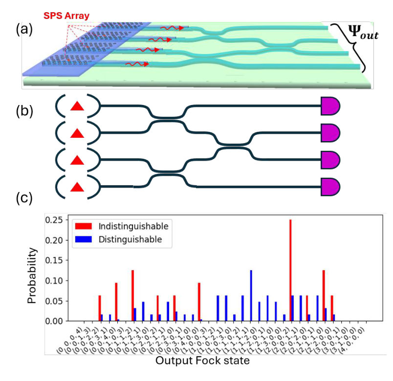
<figcaption class="paper-figure-caption"><b>Fig 5.</b> Figure 5. (a) Device level schematic and (b) circuit-schematic of the 4-mode 4-photon QIP circuit and (c) the probability distribution of various Fock state configurations at the output. The red bars assume perfectly indistinguishable photons and the blue bars indicate distinguishable photons/ classical light.</figcaption>
</figure>
</div>

<p><strong>Summary.</strong> This paper provides a comprehensive theoretical framework to analyze Boson Sampling using single photons from on-demand sources. It models how decoherence, specifically dephasing, affects the generation probability of highly entangled N-photon states. The key finding is that the achievable entanglement fidelity is quantitatively dictated by the ratio between the pure dephasing time and the photon decay time.</p>
<p><strong>Why it may be interesting.</strong> This work is highly relevant as it bridges fundamental quantum optics theory (wave packet evolution, decoherence) directly to a major quantum computing primitive (Boson Sampling), providing concrete, measurable guidelines for experimental realization using solid-state emitters.</p>
<details>
<summary>Detailed structure</summary>
<p><strong>Main problem.</strong> The paper analyzes the quantum complexity and the impact of dephasing on Boson Sampling when using Fock states generated from on-demand single photon sources.</p>
<p><strong>Main result.</strong> The probability of generating entangled states, such as the 4-photon NOON state, is quantitatively shown to depend critically on the two-photon interference visibility, which is determined by the ratio of the pure dephasing timescale to the radiative decay timescale.</p>
<p><strong>Method.</strong> The authors develop a theoretical framework that explicitly incorporates the symmetrization of N-photon states while accounting for the wave packet shape and decoherence mechanisms.</p>
<p><strong>Model / system.</strong> The system models Boson Sampling using Fock states generated from arrays of on-demand single quantum dots (MTSQDs). The theory uses Fourier series representations for single-photon wave packets and generalizes the circuit transformation using a transfer matrix acting on the wave packet shape function.</p>
<p><strong>Key observables.</strong> Probability of generation of N-photon entangled states (e.g., 4-photon NOON state); coincidence count histograms ($g^{(4)}$); two-photon interference visibility ($V_{TPI}$).</p>
<p><strong>Important parameters / regimes.</strong> Radiative decay lifetime ($T_1$), pure dephasing timescale ($T_2^*$), and the ratio $T_2^*/T_1$.</p>
<p><strong>Assumptions / limitations.</strong> The analysis assumes the weak-coupling limit for single-photon sources and simplifies the complex symmetrization by transferring the burden to the wave packet shape function.</p>
<p><strong>Figures summary.</strong> Figures illustrate the MTSQD array enabling Fock state sampling, the single/multi-photon wave packet descriptions using $T_1$ and $T_2^*$, and plots showing the dependence of $P_{NOON}$ and coincidence histograms on the dephasing visibility.</p>
<p><strong>Paper structure.</strong> The paper first establishes the physical platform (MTSQDs) and the theoretical challenge (decoherence). It then develops the mathematical framework by representing the state using wave packets and incorporating symmetrization. Finally, it applies this framework to calculate specific observables like the 4-photon NOON state probability, linking physical decay rates to quantum measurement outcomes.</p>
</details>
<details>
<summary>Abstract</summary>
<p>Boson sampling with array of on-demand single photons (discreet variable Fock states) as resource states provides distinct advantages in complexity scaling compared to single photon resource states mimicked by the states (continuous variable) generated in nonlinear photonics. Recent progress in realization of regular ordered array of mesa top single quantum dots (MTSQDs) enabling on-demand generation of many photon resource states with high single photon purity and indistinguishability [1,2] has opened the possibility of implementing chip-scale Boson sampling with single photons. An important question towards scale up of such circuits is how the dephasing and decay timescale of individual on-demand single photons affect the final probability distribution of the N-photon entangled state. In this work we report a framework that provides direct link between the physical sources of decoherence to the outcome of multiphoton correlation measurements. We explicitly incorporate the symmetrization of the N-photon states while accounting for the shape of the individual wave packets and dephasing. Using this framework, we show predictive estimates of the probability of generation of a 4-photon NOON state using an optical circuit initialized with 4 identical single photon wave packets, mimicking the emitted photons from MTSQD single photon sources reported in [2]. Specifically, we show how the probability of generating various 4-photon entangled states depend on the two-photon interference visibility which is determined by the pure dephasing timescale in relation to the radiative decay timescale. The results provide quantitative guidelines to measure 4 photon and higher number of entangled photon states generated in an optical circuit with on demand single photon sources and provide a link between physical processes such as temperature and the output state of the quantum optical circuits.</p>
</details>
<p><sub><a href="#top">↑ back to top</a></sub></p>

<p><a id="paper-2610.18124"></a></p>
<h3 id="local-error-correction-prolongs-time-crystalline-memory"><a href="http://arxiv.org/abs/2610.18124v1">Local error correction prolongs time-crystalline memory</a></h3>
<p><strong>Authors:</strong> Benedikt Fauseweh<br>
<strong>Type:</strong> both · <strong>Category:</strong> quantum information and computing · <strong>PDF:</strong> <a href="https://arxiv.org/pdf/2610.18124v1">https://arxiv.org/pdf/2610.18124v1</a><br>
<strong>Analysis basis:</strong> full PDF text, analyzed in chunks
<strong>Topic relevance:</strong> 🔥 <code>driven-dissipative phase transition</code> <strong>4/5</strong> · <code>QC/QI experiment</code> <strong>3/5</strong> · <code>analog quantum simulation</code> <strong>3/5</strong> · <code>methods for driven-dissipative</code> <strong>3/5</strong> · <code>quantum measurements</code> <strong>3/5</strong> · <code>non-equilibrium universality</code> <strong>2/5</strong> · <code>Keldysh / 2PI / non-Gaussian methods</code> <strong>1/5</strong> · <code>correlated / nonlocal dissipation</code> <strong>1/5</strong> · <code>scars &amp; prethermalization</code> <strong>1/5</strong></p>
<div class="figure-strip-hint">↔ Scroll figures horizontally</div>
<div class="paper-figures-scroll">
<figure class="paper-figure-card">

<figcaption class="paper-figure-caption"><b>Fig 1.</b> Figure 1. Local bit-flip error correction extends temporal and spatial order. a, The stochastic drive step has two alternatives for a candidate recovery block. With probability 1−𝑝, entangling gates and local rotation gates implement coherent ZZ interactions. With probability 𝑝, parity measurements and conditional data flips implement recovery, followed by ancilla reset. b, Physical embeddings of example three-site and five-site recovery blocks on two adjacent hexagons. Circles are data qubits and diamonds are ancillas. c,d, Initial state memory and mean alignment 𝐴𝑍for the two patches. Insets mark the selected hardware qubits in black. e, Connected correlations versus distance on the data...</figcaption>
</figure>
<figure class="paper-figure-card">
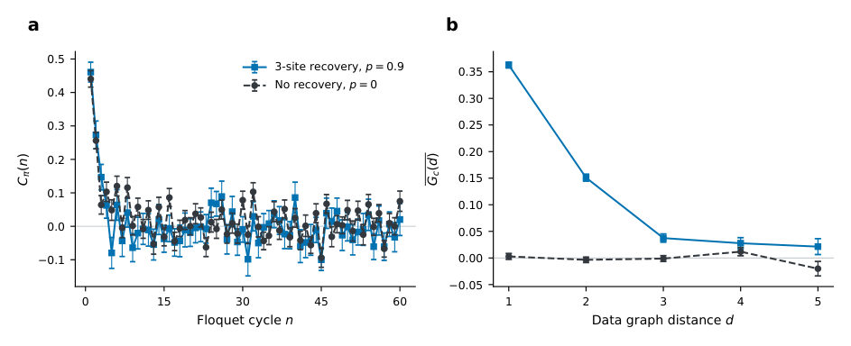
<figcaption class="paper-figure-caption"><b>Fig 2.</b> Figure 2. Small pulse angle memory decay. a, Initial-state memory on two hexagons with ten data qubits and eleven ancillas at 𝑔= 0.67. Quenched interactions and fields use the same disorder intervals as Fig. 1. Bare evolution is compared with full three-site recovery at 𝑝= 0.9. Every circuit starts from |0000000000⟩, with 128 shots per condition at each depth from 1 to 60. b, Connected correlation averaged equally over cycles 40 to 60 after averaging pairs at each graph distance. Recovery maintains short-distance correlations while subharmonic memory is lost. Bars indicate one sampling standard error.</figcaption>
</figure>
<figure class="paper-figure-card">

<figcaption class="paper-figure-caption"><b>Fig 3.</b> Figure 3. Probability distributions for Hamming distance and bonds. Mitigated distributions on the 3 × 3 patch, normalized at each depth and averaged equally over the sampled cycles 60, 70, 80, 90. The acquired conditions are the shared bare reference 𝑝= 0 and recovery at 𝑝= 0.5 and 𝑝= 0.9. The 𝑝= 0 and 𝑝= 0.9 curves use 256 shots, while the 𝑝= 0.5 curve uses 128 shots. a,b, Three-site recovery. c,d, Five-site recovery. a,c, Number 𝑊of disagreeing data bonds. b,d, Hamming distance 𝐾from the target word. The two globally aligned orientations both have 𝑊= 0 but occupy opposite ends of the 𝐾axis.</figcaption>
</figure>
<figure class="paper-figure-card">
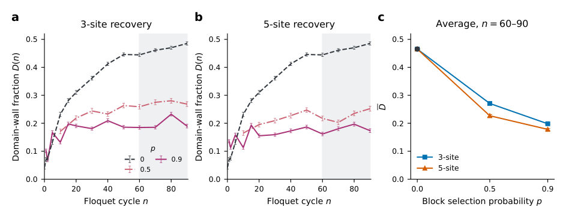
<figcaption class="paper-figure-caption"><b>Fig 4.</b> Figure 4. Spatial order dependence on block activation probability. a,b, Domain wall fraction 𝐷(𝑛) on the 3 × 3 patch for three-site and five-site recovery at 𝑝= 0.5 and 𝑝= 0.9, with the shared bare reference 𝑝= 0. The shaded region marks cycles 60 to 90. c, Equal-depth averages over the sampled cycles 60, 70, 80, 90. Five-site recovery gives a lower wall fraction at both acquired nonzero probabilities. The 𝑝= 0.5 curves use 128 shots per circuit, all other curves use 256 shots. The black point is the bare reference.</figcaption>
</figure>
<figure class="paper-figure-card">

<figcaption class="paper-figure-caption"><b>Fig 5.</b> Figure 5. Local entanglement during bare and recovered dynamics. Negativity across 91 | (89, 111) for a fixed data-qubit triple on the two-hexagon patch. a,b, Bare dynamics. c,d, Three-site recovery at 𝑝= 0.5. a,c, Exact ten-data-qubit theory with ideal gates and recovery. b,d, Density-matrix estimates from 27 Pauli settings with 768 shots each. All conditions start from |0⟩⊗10 and share the same quenched disorder. Recovery uses the same qubit activations in theory and experiment. Colors show fitted negativity.</figcaption>
</figure>
</div>

<p><strong>Summary.</strong> This work demonstrates that applying local bit-flip error correction protocols can substantially extend the memory time of time-crystalline order in a noisy quantum simulation. By implementing recovery codes on a superconducting processor, the researchers successfully combat environmental decoherence, showing that the stabilization of spatial order is particularly pronounced. This highlights the utility of QEC techniques for preserving fragile, non-equilibrium quantum states.</p>
<p><strong>Why it may be interesting.</strong> It directly addresses the crucial challenge of decoherence in simulating non-equilibrium quantum phases, providing a concrete demonstration of how quantum error correction can stabilize complex quantum memory effects.</p>
<details>
<summary>Detailed structure</summary>
<p><strong>Main problem.</strong> The primary goal is to extend the memory time of time-crystalline order in a noisy quantum processor by implementing local error correction protocols.</p>
<p><strong>Main result.</strong> Local bit-flip error correction significantly prolongs the time-crystalline memory decay time, with five-site recovery showing the greatest enhancement compared to bare dynamics.</p>
<p><strong>Method.</strong> The study uses superconducting quantum processors to simulate a driven Ising model, applying stochastic local bit-flip error correction via repetition codes and syndrome measurements.</p>
<p><strong>Model / system.</strong> The system is a driven, spatially disordered two-dimensional Ising model simulated on a superconducting quantum processor using a honeycomb lattice. The dynamics are governed by a Floquet Hamiltonian incorporating disorder and external driving.</p>
<p><strong>Key observables.</strong> Temporal memory decay ($   au$), spatial alignment ($A_Z$), connected correlation function ($G_c(d, n)$), and quantum negativity ($\mathcal{N}$).</p>
<p><strong>Important parameters / regimes.</strong> Error correction distances (three-site and five-site), block activation probability ($p$), and the driving strength ($g$).</p>
<p><strong>Assumptions / limitations.</strong> The analysis assumes the ability to perform syndrome measurements and conditional recovery gates, and uses quenched disorder realizations.</p>
<p><strong>Figures summary.</strong> Figures compare spatial alignment and connected correlations between bare evolution and recovery methods; Figure 2 shows temporal memory loss; Figure 4 tracks the domain-wall fraction $D(n)$ dependence on $p$.</p>
<p><strong>Paper structure.</strong> The paper details the physical model and error correction implementation, presents quantitative measurements of memory decay and spatial order, and compares the performance of different recovery schemes against the bare noisy dynamics.</p>
</details>
<details>
<summary>Abstract</summary>
<p>Discrete time crystals are non-equilibrium phases of matter with spatiotemporal order and a response that breaks the time-translation symmetry of a periodic external drive. Interactions, spatial disorder and correlated random driving can in theory stabilize this order. In experiments, however, coupling to the environment limits the time crystal lifetime. Here we use stochastic local bit-flip error correction to prolong the time-crystalline response of a driven, spatially disordered two-dimensional Ising model on a superconducting quantum processor, using a repetition code with distances three and five on a honeycomb lattice with up to 68 physical qubits. Even though ancilla qubits, midcircuit syndrome measurements and decoding increase the required quantum and classical resources, the stochastic drive increases the memory decay time by a factor of up to two. At late times we observe that recovery stabilizes spatial order across the lattice. The spin-configuration distributions explain this separation, as recovery suppresses disagreeing bonds while broadening occupies completely reversed states. Syndrome measurements without correction accelerate the memory decay, demonstrating the importance of conditional correction. Our results show that local bit-flip error correction can preserve time-crystalline memory over more drive cycles than the bare dynamics.</p>
</details>
<p><sub><a href="#top">↑ back to top</a></sub></p>

<p><a id="paper-2610.18267"></a></p>
<h3 id="a-complete-quantum-process-model-for-physically-realistic-photo-detection-in-the-joint-photon-number-and-spectral-degrees-of-freedom"><a href="http://arxiv.org/abs/2610.18267v1">A complete quantum process model for physically realistic photo-detection in the joint photon-number and spectral degrees of freedom</a></h3>
<p><strong>Authors:</strong> Sadia Rafi, Aeysha Khalique<br>
<strong>Type:</strong> theory · <strong>Category:</strong> other · <strong>PDF:</strong> <a href="https://arxiv.org/pdf/2610.18267v1">https://arxiv.org/pdf/2610.18267v1</a><br>
<strong>Analysis basis:</strong> full PDF text, analyzed in chunks
<strong>Topic relevance:</strong> 🔥 <code>quantum measurements</code> <strong>4/5</strong> · <code>Full counting statistics</code> <strong>3/5</strong> · <code>interference shaping light</code> <strong>3/5</strong> · <code>quantum optics experiment</code> <strong>3/5</strong> · <code>correlated / nonlocal dissipation</code> <strong>2/5</strong> · <code>methods for driven-dissipative</code> <strong>2/5</strong> · <code>Keldysh / 2PI / non-Gaussian methods</code> <strong>1/5</strong> · <code>driven-dissipative phase transition</code> <strong>1/5</strong></p>
<div class="figure-strip-hint">↔ Scroll figures horizontally</div>
<div class="paper-figures-scroll">
<figure class="paper-figure-card">
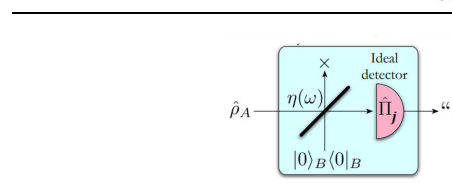
<figcaption class="paper-figure-caption"><b>Fig 1.</b> Fig. 1 An inefficient detector is modelled as a perfect detector preceded by a beam splitter with transmittivity η(ω). The input ρA is incident at one port and vacuum at the other port, which is discarded.</figcaption>
</figure>
<figure class="paper-figure-card">

<figcaption class="paper-figure-caption"><b>Fig 2.</b> Fig. 2 Probability Pj of detection of j = 1 photon (dotted curve) and j = 0 photon (dot-dashed curve) by (a) varying detector spectral bandwidth sd for fixed photon spectral bandwidth sA = 1 (b) varying photon spectral bandwidth sA for fixed detector spectral bandwidth sd = 1. Here µ = 0</figcaption>
</figure>
<figure class="paper-figure-card">
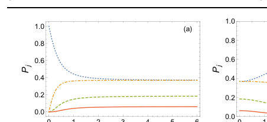
<figcaption class="paper-figure-caption"><b>Fig 3.</b> Fig. 3 Probability Pj of detection of j = 0 photon (dotted curve), j = 1 photon (dot-dashed curve), j = 2 photons(dashed) and j = 3 (solid curve) in (a) by varying detector spectral bandwidth sd, for photon spectral bandwidth sA = 1, and in (b) by varying photon spectral bandwidth sA for sd = 1. µ = 0 for both.</figcaption>
</figure>
<figure class="paper-figure-card">
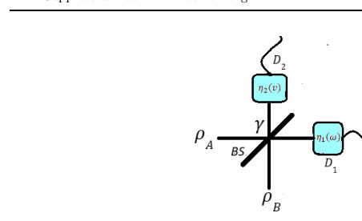
<figcaption class="paper-figure-caption"><b>Fig 4.</b> Fig. 4 Hong-Ou-Mandel effect</figcaption>
</figure>
<figure class="paper-figure-card">
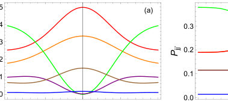
<figcaption class="paper-figure-caption"><b>Fig 5.</b> Fig. 5 Probabilities Pjj′ of detection of j photons on one detector and j′ on the other vs the time delay T for P20 (orange), P02 (red), P11 (green), P01 (purple), P10 (brown) and P00 (blue) curve for (a) sd1 = 0.1, sd2 = 1.0, sA1 = sA2 = 0.1 and µ1 = µ2 = 0 and (b) sd1 = sd2 = 0.4, sA1 = 0.1, sA2 = 0.4, µ1 = 0.2 and µ2 = 0.</figcaption>
</figure>
</div>

<p><strong>Summary.</strong> This paper introduces a comprehensive quantum process model for simulating realistic photodetection, moving beyond simple photon-number counting. By incorporating the spectral degrees of freedom via Kraus operators, it accurately models detector inefficiencies and spectral filtering. This tool is crucial for advancing quantum optics and quantum information processing by providing a physically grounded framework for analyzing photon detection events.</p>
<p><strong>Why it may be interesting.</strong> This work provides a necessary, rigorous theoretical tool for accurately simulating real-world quantum optical experiments where spectral filtering and detector imperfections are significant.</p>
<details>
<summary>Detailed structure</summary>
<p><strong>Main problem.</strong> Theoretical models of photo-detection often fail to account for the spectral characteristics of light, limiting their accuracy in quantum optical analyses.</p>
<p><strong>Main result.</strong> The authors developed a complete quantum process model using Kraus operators that successfully incorporates both photon-number statistics and frequency-dependent detector response.</p>
<p><strong>Method.</strong> The methodology involves deriving explicitly calculated Kraus operators within the operator-sum representation, treating the detector interaction via a beam-splitter model.</p>
<p><strong>Model / system.</strong> The model describes photodetection in quantum optics experiments, applicable to various detectors, and is formulated to handle spectral filtering and photon loss mechanisms.</p>
<p><strong>Key observables.</strong> Detection probabilities ($P_j$) for $j$ photons, and coincidence probabilities ($P_{jj'}$) for multi-photon processes like HOM interference.</p>
<p><strong>Important parameters / regimes.</strong> Detector efficiency ($\eta(\omega)$), incident spectral profile ($\psi(\omega)$), and the spectral bandwidths of the incident and detector modes.</p>
<p><strong>Assumptions / limitations.</strong> The detector interaction is modeled using a beam-splitter transformation, and the model is presented as a 'plug and play' replacement for simpler, idealized models.</p>
<p><strong>Figures summary.</strong> Figures illustrate the physical setup (beam splitter model), show plots of detection probabilities ($P_j$) versus spectral bandwidths for single-photon and coherent state detection, and display the characteristic dip in coincidence probability for HOM interference.</p>
<p><strong>Paper structure.</strong> The paper introduces the problem, derives the complete quantum process model using Kraus operators based on a beam-splitter analogy, and then applies this model to three canonical scenarios: single-photon detection, coherent state detection, and HOM interference.</p>
</details>
<details>
<summary>Abstract</summary>
<p>Photo-detection is a fundamental component of experimental photonics, yet theoretical models often treat detectors solely in the photon-number basis, neglecting other relevant degrees of freedom such as spectral characteristics. We present a complete quantum process model for physically realistic photodetection that incorporates both photon-number effects and frequency-dependent detector response, described through explicitly derived Kraus operators in the operator-sum representation. This formalism accommodates realistic inefficiencies, models detection within finite spectral windows, and can be directly substituted for idealized models in quantum optical analyses. The model leads to identifying the suitable detection window of the detectors relative to the spectral distribution of incident photons and conversely, in order to maximize the observability of quantum effects.</p>
</details>
<p><sub><a href="#top">↑ back to top</a></sub></p>

<p><a id="paper-2610.18661"></a></p>
<h3 id="dark-state-preparation-in-a-zero-field-split-molecular-triplet"><a href="http://arxiv.org/abs/2610.18661v1">Dark state preparation in a zero-field-split molecular triplet</a></h3>
<p><strong>Authors:</strong> Maria Pfahler, Andrea Donarini<br>
<strong>Type:</strong> both · <strong>Category:</strong> other · <strong>PDF:</strong> <a href="https://arxiv.org/pdf/2610.18661v1">https://arxiv.org/pdf/2610.18661v1</a><br>
<strong>Analysis basis:</strong> full PDF text, analyzed in chunks
<strong>Topic relevance:</strong> 🔥 <code>methods for driven-dissipative</code> <strong>4/5</strong> · <code>driven-dissipative phase transition</code> <strong>3/5</strong> · <code>quantum measurements</code> <strong>3/5</strong> · <code>Keldysh / 2PI / non-Gaussian methods</code> <strong>2/5</strong> · <code>QC/QI experiment</code> <strong>2/5</strong> · <code>analog quantum simulation</code> <strong>2/5</strong> · <code>non-equilibrium universality</code> <strong>2/5</strong> · <code>correlated / nonlocal dissipation</code> <strong>1/5</strong></p>
<div class="figure-strip-hint">↔ Scroll figures horizontally</div>
<div class="paper-figures-scroll">
<figure class="paper-figure-card">
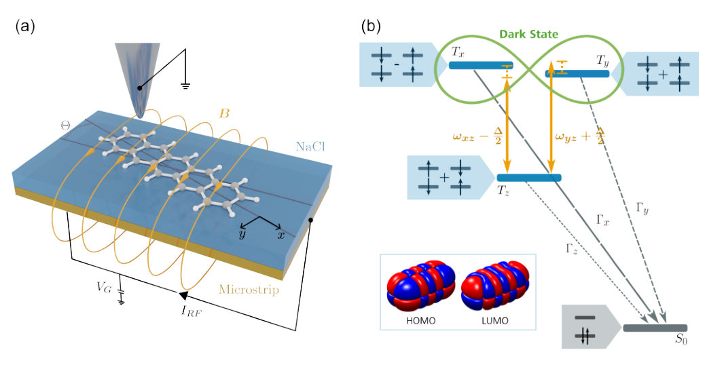
<figcaption class="paper-figure-caption"><b>Fig 1.</b> FIG. 1: Dark state in single molecule ESR-AFM. (a) Pentacene is placed on a thick insulating substrate in a specific angle Θ with respect to the current direction in the underlying microstrip. The resulting magnetic field couples to the molecular spin. Additionally, a gate voltage is applied to tune the molecular charge. (b) Schematic visualization of the dark state in the ZFS triplet with driving and decay to singlet: Anisotropic frontier orbitals of pentacene populated by unpaired spins coupled by dipole-dipole interaction give rise to the zero-field splitting of the triplet.</figcaption>
</figure>
<figure class="paper-figure-card">
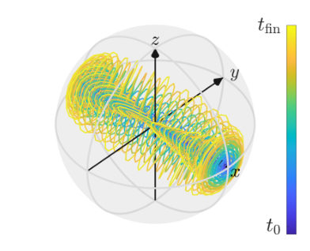
<figcaption class="paper-figure-caption"><b>Fig 2.</b> FIG. 2: Trajectory in lab frame of the expectation values of the spin components for the initial pure state associated to |ψ⟩= 1 √</figcaption>
</figure>
<figure class="paper-figure-card">
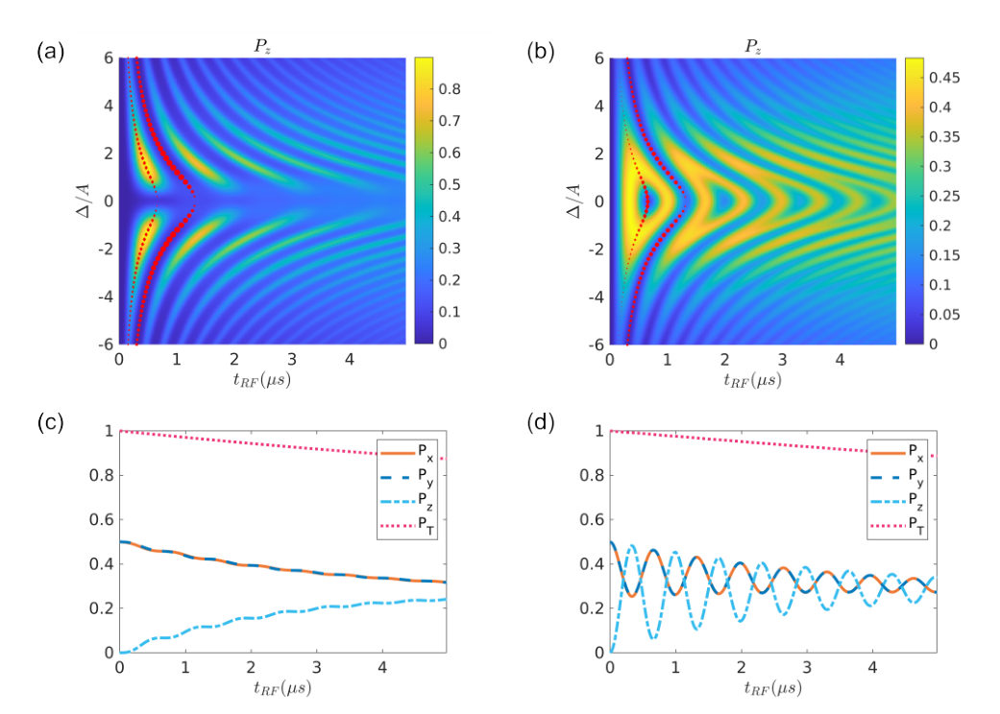
<figcaption class="paper-figure-caption"><b>Fig 3.</b> FIG. 3: Near-resonant driving of dark and incoherent initial states. Tz-population Pz obtained for applying a rf drive with different detunings ∆, equal amplitudes (Axz = Ayz) and phase shifts ϕxz = ϕyz = 0 in (a) for the corresponding DS, and in (b) for the fully incoherent superposition 1</figcaption>
</figure>
<figure class="paper-figure-card">

<figcaption class="paper-figure-caption"><b>Fig 4.</b> FIG. 4: Amplitude of the first Pz oscillation for the DS (blue), the fully incoherent superposition of |Tx⟩and |Ty⟩(orange) and the bright state (magenta). The full lines result from the numerical simulations including dissipation. The dashed lines represent the analytical results in Eqs. (22) to (24).</figcaption>
</figure>
<figure class="paper-figure-card">

<figcaption class="paper-figure-caption"><b>Fig 5.</b> FIG. 5: ∆Pz as a function of the phase difference ∆ϕ = ϕyz −ϕxz and the frequency detuning ∆of the rf driving. The initial state is the DS in Eq. (20) always prepared with ∆ϕDS = 0 and equal amplitudes R = 1.</figcaption>
</figure>
</div>

<p><strong>Summary.</strong> This paper details a method to prepare and measure dark states in the spin resonance of a single molecule using an ESR-AFM setup. By modeling the system as an open quantum system, the authors derive the conditions for a stationary dark state, demonstrating its unique signature compared to classical or incoherent dynamics. This advances the use of molecular electronics for studying fundamental quantum coherence.</p>
<p><strong>Why it may be interesting.</strong> This work directly applies advanced open quantum system techniques (Lindblad equation, dark state theory) to a solid-state molecular system, providing a pathway to observe fundamental quantum coherence phenomena in nanoscale devices.</p>
<details>
<summary>Detailed structure</summary>
<p><strong>Main problem.</strong> The paper proposes a protocol to prepare and probe dark states in a single-molecule electron spin resonance setup using Atomic Force Microscopy (ESR-AFM).</p>
<p><strong>Main result.</strong> The study characterizes the dark state as a coherent superposition of two ZFS states that remains stationary despite continuous resonant driving, providing a robust diagnostic tool for quantum coherence.</p>
<p><strong>Method.</strong> The analysis employs a density-matrix formalism (Lindblad equation) to treat the system as a driven open quantum system, comparing the dynamics of the dark state against its incoherent counterpart.</p>
<p><strong>Model / system.</strong> The system is a neutral molecule possessing a zero-field-split (ZFS) first excited triplet, coupled to an AFM tip and metallic microstrip. The dynamics are modeled using a Hamiltonian incorporating ZFS terms and time-dependent driving fields.</p>
<p><strong>Key observables.</strong> Population of the triplet state ($P_z$), coherences (off-diagonal elements of $\hat{
ho}$), and the measured electrostatic force signal via ESR-AFM readout.</p>
<p><strong>Important parameters / regimes.</strong> Zero-field splitting parameter ($D$), Zeeman splitting ($E$), and the detuning ($\Delta$) relative to the driving field.</p>
<p><strong>Assumptions / limitations.</strong> The analysis assumes the molecule is well-positioned within the microstrip, and approximations like the Rotating Wave Approximation (RWA) and neglecting certain decay pathways are used.</p>
<p><strong>Figures summary.</strong> Figures schematically illustrate the ESR-AFM setup and the dark state in the ZFS triplet. Later figures compare the time evolution of populations for the dark state versus an incoherent initial state.</p>
<p><strong>Paper structure.</strong> The paper first establishes the physical setup and Hamiltonian, then derives the dark state condition using the density-matrix formalism in the rotating frame. It proceeds to characterize the state's properties by comparing coherent vs. incoherent dynamics and proposes measurable signatures.</p>
</details>
<details>
<summary>Abstract</summary>
<p>We propose a protocol to prepare and probe dark states in a single-molecule electron spin resonance based on atomic force microscopy (ESR-AFM), thus extending existing techniques developed to address Rabi oscillations. To this end, we simulate in analogy to atomic physics the coherent manipulation of a three-level system in the V-configuration using a multifrequency magnetic field. More specifically, we consider a neutral molecule with a zero-field-split (ZFS) first excited triplet and analyze within a pump-probe scheme the dynamics of the total triplet population. In the triplet subspace, the dark state is a coherent superposition formed by two ZFS states which does not evolve in time despite a continuous resonant driving towards the third one. We characterize the properties of this state comparing it to its fully incoherent counterpart. Within a density-matrix formalism for open systems, we then compute the expected dark state signatures both for ideal scenarios and for the realistic parameterization of ESR-AFM on pentacene.</p>
</details>
<p><sub><a href="#top">↑ back to top</a></sub></p>

<p><a id="paper-2610.17885"></a></p>
<h3 id="deep-mesoscopic-dynamics"><a href="http://arxiv.org/abs/2610.17885v1">Deep Mesoscopic Dynamics</a></h3>
<p><strong>Authors:</strong> Yue Zhao, Shiqi Wu, Yihang Ouyang, Sergey Grebenchuk, Magdalena Grzeszczyk, Xiaoxu Zhao, Kostya S. Novoselov, Maciej Koperski, Qianxiao Li<br>
<strong>Type:</strong> both · <strong>Category:</strong> statistical mechanics · <strong>PDF:</strong> <a href="https://arxiv.org/pdf/2610.17885v1">https://arxiv.org/pdf/2610.17885v1</a><br>
<strong>Analysis basis:</strong> full PDF text, analyzed in chunks
<strong>Topic relevance:</strong> 🔥 <code>methods for driven-dissipative</code> <strong>4/5</strong> · <code>Keldysh / 2PI / non-Gaussian methods</code> <strong>3/5</strong> · <code>correlated / nonlocal dissipation</code> <strong>3/5</strong> · <code>driven-dissipative phase transition</code> <strong>3/5</strong> · <code>non-equilibrium universality</code> <strong>2/5</strong> · <code>Frenkel-Kontorova</code> <strong>1/5</strong> · <code>analog quantum simulation</code> <strong>1/5</strong> · <code>quantum measurements</code> <strong>1/5</strong> · <code>scars &amp; prethermalization</code> <strong>1/5</strong></p>
<div class="figure-strip-hint">↔ Scroll figures horizontally</div>
<div class="paper-figures-scroll">
<figure class="paper-figure-card">

<figcaption class="paper-figure-caption"><b>Fig 1.</b> Figure 1: Workflow of DeepMesoD. Microscopic trajectories are coarse-grained into observations of a mesoscopic field at a prescribed spatial scale. DeepMesoD uses these trajectories to estimate the physical structures in a mesoscopic field equation within a prescribed dynamical class.</figcaption>
</figure>
<figure class="paper-figure-card">
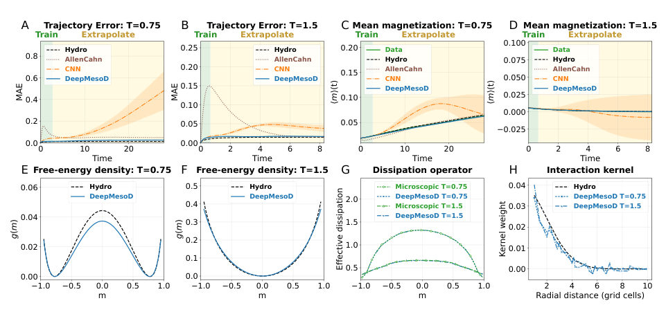
<figcaption class="paper-figure-caption"><b>Fig 2.</b> Figure 2: Validation of DeepMesoD in the Ising–Kac system with hydrodynamic limit. The DeepMesoD rollouts are noise-free with the Itˆo thermal drift retained. A,B. Field mean ab- solute error at each evaluation time for T = 0.75 and T = 1.5. Green shading marks the training interval, and yellow shading marks the subsequent rollout-only interval. C,D. Mean magnetisa- tion during the same rollouts. E,F. Homogeneous free-energy density g(m), compared with the hydrodynamic-limit reference. Each curve is shifted independently so that its minimum is zero. G. Conditional dissipation-operator response E{[K[ϕ]1](x) | ϕ(x) = m}, compared with the reference in (4) computed from the corresponding...</figcaption>
</figure>
<figure class="paper-figure-card">
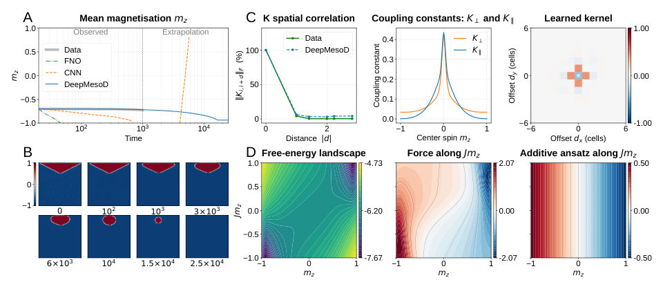
<figcaption class="paper-figure-caption"><b>Fig 3.</b> Figure 3: Long-term stability and thermodynamic-structure recovery in atomistic spin dynamics. A. Long-term rollout from a triangular-domain initial condition on the same lat- tice. The DeepMesoD prediction is noise-free with the Itˆo thermal drift retained. Training uses random-initial-state trajectories. The triangular-domain initial condition is used for geometric- initial-condition extrapolation, not for fitting these stages. The dashed boundary at 1 ns separates the interval with an atomistic reference (“Observed”) from the interval without a reference (“Ex- trapolation”), ending at 25 ns. Time labels are in ps. The atomistic reference permits accuracy comparisons over 0–1 ns, but...</figcaption>
</figure>
<figure class="paper-figure-card">
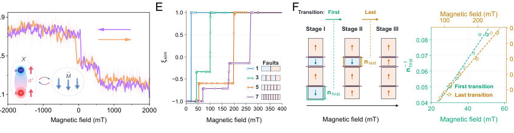
<figcaption class="paper-figure-caption"><b>Fig 4.</b> Figure 4. A learned stacking-fault interaction connects internal geometry to multistep magnetic response in CrBr3. A. Structural and magnetic schematic of layered CrBr3. Left: crystal structure of CrBr3 (Cr atoms in purple, Br atoms in gold). Middle: top and side views of representative M-stacking and AB-stacking configurations, where M denotes monoclinic stacking and AB denotes rhombohedral stacking and the two adjacent layers are coloured purple and green. Right: schematic AFM (antiparallel) and FM (parallel) interlayer spin alignments across a stacking fault, shown alongside the simulated three-dimensional magnetisation field mz at the final time step. The light-blue plane marks the...</figcaption>
</figure>
</div>

<p><strong>Summary.</strong> This paper introduces Deep Mesoscopic Dynamics (DeepMesoD), a neural network approach to derive effective field equations governing mesoscopic physics from microscopic simulations. By enforcing physical constraints like the fluctuation-dissipation theorem, it accurately models complex magnetic materials like $    ext{CrBr}_3$ and Heisenberg ferromagnets. This results in dramatic computational speedups while retaining crucial spatial details lost in simple averaging methods.</p>
<p><strong>Why it may be interesting.</strong> This work provides a powerful, data-driven tool for simulating complex, spatially extended many-body systems where traditional analytical or purely microscopic simulations are intractable due to scale separation.</p>
<details>
<summary>Detailed structure</summary>
<p><strong>Main problem.</strong> Developing an efficient method to simulate mesoscopic dynamics that resolves spatial patterns, overcoming the limitations of microscopic simulations (too small/short time) and bulk descriptions (erase patterns via averaging).</p>
<p><strong>Main result.</strong> The DeepMesoD framework successfully learns effective mesoscopic field equations for complex magnetic systems, achieving massive computational speedups while accurately capturing physical phenomena like fault-induced coupling changes.</p>
<p><strong>Method.</strong> The authors introduce Deep Mesoscopic Dynamics (DeepMesoD), using neural networks to learn the effective mesoscopic field equation directly from microscopic trajectories while enforcing physical constraints like the fluctuation-dissipation relation.</p>
<p><strong>Model / system.</strong> The work applies to general dissipative mesoscopic dynamics, validated on the Ising-Kac model, 2D Heisenberg ferromagnets, and layered $    ext{CrBr}_3$ magnets, modeling the evolution of a mesoscopic field $\phi$ on a spatial domain $\Omega$.</p>
<p><strong>Key observables.</strong> Free-energy functional, dissipation operator, learned interaction kernels, and magnetic response functions (e.g., fault-plane correlation $\xi_{sim}(h)$).</p>
<p><strong>Important parameters / regimes.</strong> Coarse-graining scale, temperature ($T$), external magnetic field ($h_{	ext{ext}}$), and the number/placement of stacking faults.</p>
<p><strong>Assumptions / limitations.</strong> The learned dynamics are constrained to satisfy the fluctuation-dissipation relation, and the method assumes that the underlying physics can be captured by a structured neural network representation of the effective equation.</p>
<p><strong>Figures summary.</strong> Figures illustrate the workflow from microscopic trajectories to the learned mesoscopic equation. Specific figures detail the construction of multi-fault interlayer kernels and the resulting field dependence of the fault-plane correlation $\xi_{sim}(h)$ based on fault geometry.</p>
<p><strong>Paper structure.</strong> The paper first introduces the DeepMesoD framework and validates it on the Ising-Kac model. It then applies the method to the 2D Heisenberg ferromagnet and layered $  ext{CrBr}_3$, demonstrating the ability to capture complex physics like fault-induced coupling changes, and finally details the mathematical construction for isolating the effect of fault geometry.</p>
</details>
<details>
<summary>Abstract</summary>
<p>Microscopic simulations resolve spatial patterns but are feasible only over small domains and short timescales, whereas bulk descriptions erase those patterns through spatial averaging. Mesoscopic fields preserve this spatial organisation, but their effective equations are known only for selected microscopic systems and scaling limits. We introduce Deep Mesoscopic Dynamics (DeepMesoD), which uses neural networks to learn an effective mesoscopic field equation from microscopic trajectories at a prescribed coarse-graining scale. For the nonconserved dissipative dynamics studied here, DeepMesoD learns the free-energy functional with a spatial interaction kernel and a state-dependent dissipation operator constrained by the fluctuation-dissipation relation. We first validate the construction in the Ising-Kac model, where the learned mesoscopic equation recovers the known hydrodynamic limit and rollouts remain stable far beyond the training horizon. We then treat two systems without closed-form mesoscopic descriptions. For a two-dimensional Heisenberg ferromagnet governed by atomistic spin dynamics, DeepMesoD learns a mesoscopic model whose predictions match atomistic references up to 1 ns, and a rollout with an unseen initial condition remains bounded up to 25 ns. For layered CrBr$_3$, the learned kernel captures the suppression and sign reversal of interlayer coupling at a stacking fault whose location and strength are not supplied as inputs. Controlled changes to the learned interaction show how fault number and placement shape multistep magnetic responses, complementing our magneto-photoluminescence measurements. Across the two atomistic systems, DeepMesoD achieves a three-to-four-order-of-magnitude reduction in wall-clock time compared with atomistic spin dynamics.</p>
</details>
<p><sub><a href="#top">↑ back to top</a></sub></p>

<p><a id="paper-2610.17855"></a></p>
<h3 id="emergent-non-biorthogonal-born-rule-at-dynamical-quantum-phase-transitions"><a href="http://arxiv.org/abs/2610.17855v1">Emergent Non-Biorthogonal Born Rule at Dynamical Quantum Phase Transitions</a></h3>
<p><strong>Authors:</strong> Wei-Wei Yang, Henning Schomerus, Jiangping Hu, Zhesen Yang<br>
<strong>Type:</strong> theory · <strong>Category:</strong> statistical mechanics · <strong>PDF:</strong> <a href="https://arxiv.org/pdf/2610.17855v1">https://arxiv.org/pdf/2610.17855v1</a><br>
<strong>Analysis basis:</strong> full PDF text, analyzed in chunks
<strong>Topic relevance:</strong> 🔥 <code>driven-dissipative phase transition</code> <strong>4/5</strong> · <code>correlated / nonlocal dissipation</code> <strong>3/5</strong> · <code>methods for driven-dissipative</code> <strong>3/5</strong> · <code>non-equilibrium universality</code> <strong>3/5</strong> · <code>Keldysh / 2PI / non-Gaussian methods</code> <strong>2/5</strong> · <code>quantum measurements</code> <strong>2/5</strong> · <code>analog quantum simulation</code> <strong>1/5</strong></p>
<div class="figure-strip-hint">↔ Scroll figures horizontally</div>
<div class="paper-figures-scroll">
<figure class="paper-figure-card">
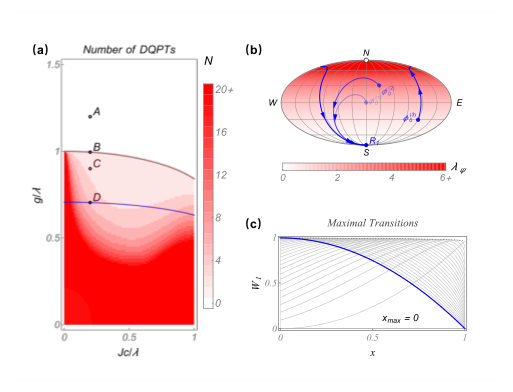
<figcaption class="paper-figure-caption"><b>Fig 1.</b> FIG. 1. Phase diagram and the orthogonal DQPT. (a) Number NDQPT of zeros of det USS(t) within the observation window λt ≤60, versus Jc/λ and g/λ. The gray and blue curves mark the DQPT boundary and the EP-DQPT locus; points A–D at Jc/λ = 0.2 mark the no-DQPT (g/λ = 1.2), boundary (0.9953), generic (0.9), and EP-DQPT (0.7047) parameter sets. (b) Critical-time Loschmidt-echo landscape λψ = −ln Lψ(tc) on the Bloch sphere (Mollweide projection) at the boundary point B. The unique zero-echo state sits at the north pole, and the projected trajectories of distinct initial states ϕ(1,2,3) 0 all funnel into the output |R1⟩at the south pole. (c) Transition probability W1 = |⟨R1|Uc|ψ⟩|2 versus x =...</figcaption>
</figure>
<figure class="paper-figure-card">
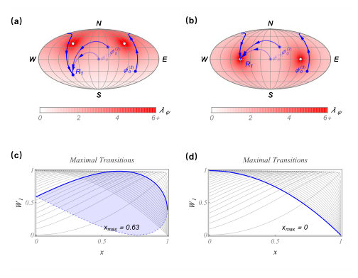
<figcaption class="paper-figure-caption"><b>Fig 2.</b> FIG. 2. Critical-time Loschmidt-echo landscapes on the Bloch sphere [(a),(b)] and transition probability W1 versus x [(c),(d)], for the generic non-biorthogonal DQPT point [(a),(c)] and the EP-DQPT point [(b),(d)].</figcaption>
</figure>
<figure class="paper-figure-card">
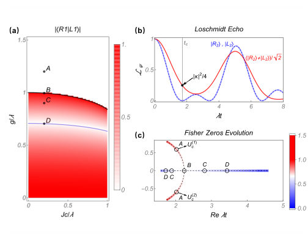
<figcaption class="paper-figure-caption"><b>Fig 3.</b> FIG. 3. Critical-state geometry and critical-time structure. (a) Overlap |⟨L1|R1⟩| across the phase diagram; curves and points A–D as in Fig. 1(a). From the DQPT boundary to the EP-DQPT locus it falls from unity to zero, obeying |⟨R1|R2⟩|2+ |⟨L1|R1⟩|2 = 1. (b) Loschmidt echoes at the EP point D: those of |R2⟩and |L2⟩coincide and vanish at tc, whereas their equal superposition has L(tc) = |κ|2/4. (c) Fisher zeros of det USS in the complex-λt plane as g/λ varies at Jc/λ = 0.2; colors encode g/λ, dashed curves trace the zero trajectories, and circles mark points A–D.</figcaption>
</figure>
<figure class="paper-figure-card">

<figcaption class="paper-figure-caption"><b>Fig 4.</b> FIG. 4. Absolute determinant dynamics, |D(t)| = | det USS(t)|, at the four representative points marked in Fig. 1(a). Panels (a)–(d) correspond to no DQPT, the DQPT boundary, a generic non-biorthogonal DQPT, and an EP- DQPT, respectively. The dashed line denotes |D(t)| = 0. Counting distinct zeros over the phase-diagram observation window, with the quadratic tangency in (b) counted once, gives NDQPT = (0, 1, 2, 4).</figcaption>
</figure>
</div>

<p><strong>Summary.</strong> This paper develops a novel 'non-biorthogonal Born rule' to give a clear probabilistic meaning to non-Hermitian quantum dynamics, particularly near Dynamical Quantum Phase Transitions (DQPTs). By analyzing the determinant of the subsystem propagator, the authors distinguish between different types of transitions, including those occurring at exceptional points. It provides a rigorous link between the formalism of Hermitian quantum mechanics and the physics of open, non-Hermitian systems.</p>
<p><strong>Why it may be interesting.</strong> This work is highly relevant to AMO physics and open quantum systems as it provides a fundamental, physically grounded framework for interpreting non-Hermitian dynamics, which often arises when modeling dissipation or coupling to an environment.</p>
<details>
<summary>Detailed structure</summary>
<p><strong>Main problem.</strong> The paper aims to provide a rigorous probabilistic interpretation for non-Hermitian quantum mechanics, specifically in the context of Dynamical Quantum Phase Transitions (DQPTs). It addresses the ambiguity arising from the non-biorthogonal nature of left and right eigenstates.</p>
<p><strong>Main result.</strong> The authors establish an 'emergent non-biorthogonal Born rule' based on the overlap of left and right states, which provides a clear, physically accessible transition probability. They also characterize Exceptional-Point DQPTs (EP-DQPTs) where eigenstates coalesce.</p>
<p><strong>Method.</strong> The analysis generalizes DQPTs from a reference state to a physical subspace, utilizing the subspace propagator $U_S(t)$ and analyzing its determinant ($\det U_S(t)$) as a key diagnostic. The theory builds upon the framework of globally Hermitian systems.</p>
<p><strong>Model / system.</strong> The study uses a model involving a two-level subsystem coupled to a 1D tight-binding chain (environment). The dynamics are governed by the subspace propagator $U_S(t) = \langle S|e^{-iHt}|S
angle$.</p>
<p><strong>Key observables.</strong> Subspace propagator determinant ($\det U_S(t)$), Loschmidt echo amplitude, and the left-right eigenstate overlap $|\langle L_1|R_1
angle|$ (dynamical phase rigidity).</p>
<p><strong>Important parameters / regimes.</strong> Coupling strengths ($g/\lambda, J_c/\lambda$), and the time evolution parameter $t$.</p>
<p><strong>Assumptions / limitations.</strong> The standard biorthogonal normalization is assumed to be gauge-dependent and insufficient for direct probability interpretation. The analysis contrasts the behavior of the determinant in Markovian vs. non-Markovian regimes.</p>
<p><strong>Figures summary.</strong> Figures illustrate the phase diagram showing the number of DQPT zeros and compare the Loschmidt echo landscapes and transition probability dependence at generic and EP-DQPT points.</p>
<p><strong>Paper structure.</strong> The paper progresses by first establishing the need for a probabilistic interpretation in non-Hermitian dynamics. It then analyzes the DQPT diagnostic using the subspace propagator, deriving the non-biorthogonal Born rule. Finally, it characterizes the specific types of transitions, including EP-DQPTs, and contrasts the determinant criterion with known physical limits.</p>
</details>
<details>
<summary>Abstract</summary>
<p>Non-Hermitian dynamics possesses distinct left and right eigenstates, but their normalization freedom obscures a direct probabilistic interpretation.   Starting from a globally Hermitian system governed by the standard Born rule, we generalize dynamical quantum phase transitions (DQPTs) from a reference state to a physical subspace.   This generalization provides a clear probabilistic interpretation of left and right states: when each state is normalized to itself, their mutual overlap determines a directly accessible dynamical transition rate.   We discuss the new phenomena governed by this emergent non-biorthogonal Born rule and further identify a class of exceptional-point DQPTs (EP-DQPTs), at which the eigenstates of the critical propagator coalesce.   Our theory places the probabilistic interpretation of non-Hermitian quantum mechanics on the firm footing of Hermitian quantum mechanics.</p>
</details>
<p><sub><a href="#top">↑ back to top</a></sub></p>

<p><a id="paper-2610.17328"></a></p>
<h3 id="krylov-complexity-and-quantum-many-body-scars-in-non-hermitian-kinetically-constrained-models"><a href="http://arxiv.org/abs/2610.17328v1">Krylov Complexity and Quantum Many-body Scars in Non-Hermitian Kinetically Constrained Models</a></h3>
<p><strong>Authors:</strong> Arkaprava Sil, Rudraksh Kaushik, Souvik Kundu, Prasant Mallik, Sudipto Singha Roy<br>
<strong>Type:</strong> theory · <strong>Category:</strong> other · <strong>PDF:</strong> <a href="https://arxiv.org/pdf/2610.17328v1">https://arxiv.org/pdf/2610.17328v1</a><br>
<strong>Analysis basis:</strong> full PDF text, analyzed in chunks
<strong>Topic relevance:</strong> 🔥 <code>scars &amp; prethermalization</code> <strong>4/5</strong> · <code>Rydberg arrays</code> <strong>3/5</strong> · <code>analog quantum simulation</code> <strong>3/5</strong> · <code>driven-dissipative phase transition</code> <strong>2/5</strong> · <code>methods for driven-dissipative</code> <strong>2/5</strong> · <code>non-equilibrium universality</code> <strong>2/5</strong> · <code>correlated / nonlocal dissipation</code> <strong>1/5</strong></p>
<div class="figure-strip-hint">↔ Scroll figures horizontally</div>
<div class="paper-figures-scroll">
<figure class="paper-figure-card">
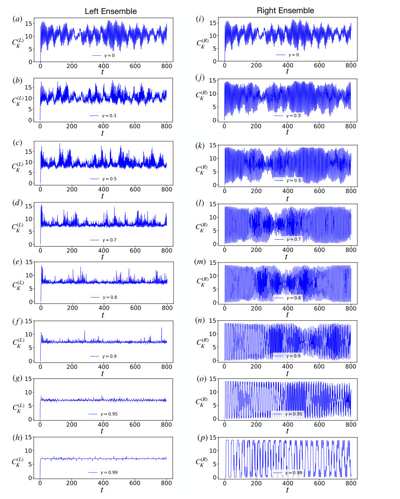
<figcaption class="paper-figure-caption"><b>Fig 1.</b> Figure 1. Krylov complexity for the left and right ensembles in the non-Hermitian PXP model with increasing γ. In (a)–(h), we show the behavior obtained for the left ensemble (C(L) K ) for γ = 0.0, 0.3, 0.5, 0.7, 0.8, 0.9, 0.95, 0.99, respectively, with |Z2⟩taken as the initial state. The corresponding results for the right ensemble (C(R) K ) are shown in (i)–(p). All plots are for L = 14. For the left ensemble, increasing γ leads to a progressive suppression of the oscillations and a tendency towards saturation of C(L) K , whereas for the right ensemble the oscillations in C(R) K become increasingly prominent. This distinct behavior highlights the different Krylov-complexity dynamics of...</figcaption>
</figure>
<figure class="paper-figure-card">
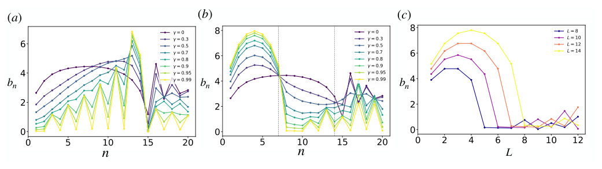
<figcaption class="paper-figure-caption"><b>Fig 2.</b> Figure 2. Behavior of Arnoldi coefficients with Krylov steps. (a) Arnoldi coefficients bn as a function of the Krylov index n for the right eigenvector ensemble, shown for various non-Hermitian parameter values γ. The γ = 0 curve corresponds to the Hermitian PXP model and exhibits the characteristic arch-shaped profile associated with quantum many-body scar states. As γ increases, this arch-shaped structure is progressively modified, revealing a behavior distinctly different from the Hermitian limit. (b) bn versus n for the left eigenvector ensemble at the same values of γ. Unlike the right ensemble, a Hermitian-like arch-shaped imprint re-emerges even at large γ, but with a notable γ-...</figcaption>
</figure>
<figure class="paper-figure-card">
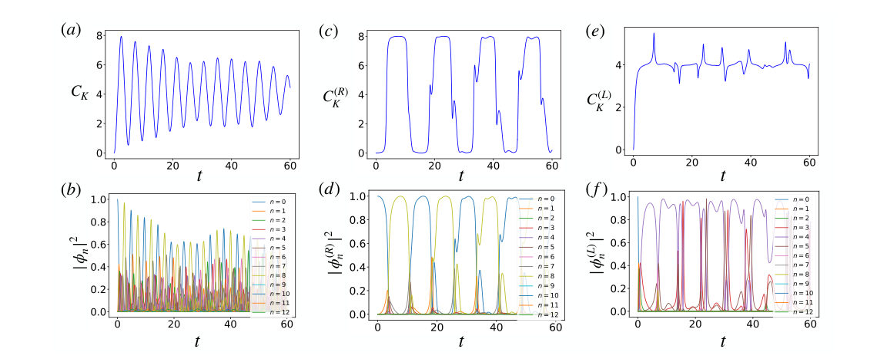
<figcaption class="paper-figure-caption"><b>Fig 3.</b> Figure 3. Krylov complexity and probability dynamics in Hermitian and non-Hermitian PXP systems. (a) We replot the Krylov complexity CK(t) as a function of time for the Hermitian PXP model, to compare with the corresponding Krylov-space probabilities |ϕn(t)|2. Here, we consider L = 8, for which the Krylov-space dimension is 12. (b) Shows the Krylov-space probabilities |ϕn(t)|2 for the Hermitian case for all 12 Krylov states, highlighting the probability transfer between the Krylov states and the dominant oscillations of |ϕ0(t)|2 and |ϕ8(t)|2. (c) Depicts the Krylov complexity C(R) K (t) for the non-Hermitian right ensemble, showing the modified oscillatory behavior of the complexity, and...</figcaption>
</figure>
<figure class="paper-figure-card">

<figcaption class="paper-figure-caption"><b>Fig 4.</b> Figure 4. Coefficients of the Hessenberg matrix in the right and left ensembles. (a) Here, we plot the coefficients of the Hesseneberg matrix, hi,i−1(bn) and hi,i+1, as a function of the Krylov index n for the right ensemble, while (b) shows the corresponding behavior for the left ensemble. In both cases, we observe that the behavior of hi,i−1 is almost the opposite of hi,i+1.</figcaption>
</figure>
<figure class="paper-figure-card">
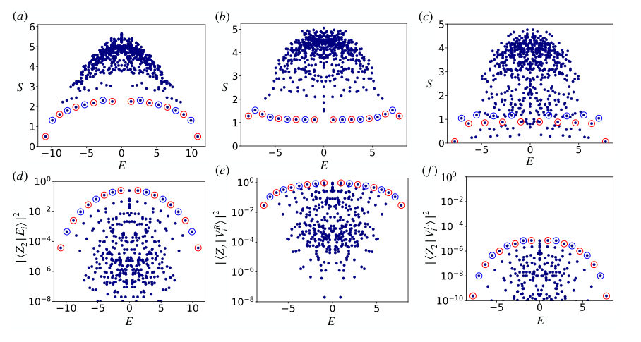
<figcaption class="paper-figure-caption"><b>Fig 5.</b> Figure 5. Entanglement structure and scar-state overlaps in the Hermitian and non-Hermitian PXP models. (a) Shows the behavior of entanglement entropy (EE) with energy E, for the Hermitian PXP model (γ = 0). (b) and (c) show the corresponding EE versus E plots for the right and left ensembles, respectively, of the non-Hermitian PXP model at γ = 0.7. (d) Overlap of the PXP eigenstates with the |Z2⟩state. (e) and (f) show the corresponding overlaps for the right and left ensembles, respectively, of the non-Hermitian PXP model. All plots are for L = 18 and include the two momentum sectors k = 0 and π. The scar states are highlighted by circles, with red and blue circles denoting the k = 0 and...</figcaption>
</figure>
</div>

<p><strong>Summary.</strong> This paper analyzes non-Hermitian generalizations of Rydberg blockade models to study thermalization breakdown. By comparing the left and right Krylov ensembles, the authors find that non-Hermiticity causes distinct dynamical signatures, necessitating separate characterization of these two ensembles. This highlights a key difference in dynamics when moving from Hermitian to non-Hermitian quantum systems.</p>
<p><strong>Why it may be interesting.</strong> This work is highly relevant as it extends the study of quantum scars and ergodicity breaking into the non-Hermitian domain, a crucial area for understanding open quantum systems and realistic physical implementations like Rydberg arrays.</p>
<details>
<summary>Detailed structure</summary>
<p><strong>Main problem.</strong> The study investigates the breakdown of thermalization and dynamics in non-Hermitian kinetically constrained quantum many-body systems, specifically addressing the fundamental difference between left and right eigenstate ensembles.</p>
<p><strong>Main result.</strong> Non-Hermiticity causes distinct dynamical behaviors in the left and right Krylov ensembles, such as different trends in Krylov complexity and the emergence of unique non-scar eigenstates in the left ensemble.</p>
<p><strong>Method.</strong> The authors employ Krylov complexity analysis, utilizing Arnoldi's algorithm to construct separate left and right Krylov bases for non-Hermitian generalizations of PXP and PPXPP models.</p>
<p><strong>Model / system.</strong> The models are non-Hermitian generalizations of the paradigmatic PXP and PPXPP models, which are effective descriptions of a 1D Rydberg atom array subjected to the Rydberg blockade condition.</p>
<p><strong>Key observables.</strong> Krylov complexity, Arnoldi coefficients, entanglement entropy, and the structure of quantum many-body scars.</p>
<p><strong>Important parameters / regimes.</strong> The non-Hermiticity parameter ($\gamma$), system size ($L$), and the specific choice of probe states.</p>
<p><strong>Assumptions / limitations.</strong> The analysis assumes that the left and right eigenstate ensembles must be treated separately because they encode distinct dynamical and structural information that cannot be inferred from the Hermitian limit.</p>
<p><strong>Figures summary.</strong> The figures compare Krylov complexity evolution (showing oscillation vs. saturation) and illustrate the modification of Arnoldi coefficients and entanglement entropy across the left and right ensembles.</p>
<p><strong>Paper structure.</strong> The paper progresses by introducing the non-Hermitian models, applying the Arnoldi method to generate left/right bases, and then analyzing the resulting Krylov complexity and eigenstate properties to draw conclusions about ensemble inequivalence.</p>
</details>
<details>
<summary>Abstract</summary>
<p>Thermalization in closed quantum systems and its breakdown are central to understanding the emergence of statistical behavior in isolated many-body systems. Kinetic constraints can hinder thermalization by restricting the allowed dynamics and giving rise to non-ergodic behavior. While various aspects of ergodicity breaking in kinetically constrained models have been extensively studied in Hermitian systems, their behavior in non-Hermitian kinetically constrained models remains less explored. In particular, the inequivalence of left and right eigenstate ensembles in non-Hermitian systems raises the question of whether they exhibit qualitatively different dynamical and eigenstate properties. In this work, we study non-Hermitian generalizations of the paradigmatic PXP and PPXPP models, focusing on their Krylov complexity, eigenstate structure, and dynamics. By exploiting the Arnoldi's algorithm, we find distinct behavior of Krylov complexity in the left and right eigenstate ensembles as non-Hermiticity is increased: in the right ensemble, it exhibits persistent oscillations with an increasing period, while in the left ensemble, it gradually saturates. The characteristic arch-shaped profile of the Arnoldi coefficients is also modified differently in the two ensembles, with a Hermitian-like arch re-emerging in the left ensemble at large non Hermiticity. Additionally, in the non-Hermitian PXP model, the right ensemble retains the characteristic scar structure, while the left ensemble develops additional non-scar eigenstates with anomalously low entanglement and large overlap with the vacuum state. These findings reveal that non-Hermiticity can affect Krylov dynamics and eigenstate structure differently in the left and right ensembles, demonstrating the need to treat them separately when characterizing non-Hermitian kinetically constrained systems.</p>
</details>
<p><sub><a href="#top">↑ back to top</a></sub></p>

<p><a id="paper-2610.18279"></a></p>
<h3 id="coherent-phonon-generation-from-prethermal-carrier-populations-in-a-semiconductor"><a href="http://arxiv.org/abs/2610.18279v1">Coherent Phonon Generation from Prethermal Carrier Populations in a Semiconductor</a></h3>
<p><strong>Authors:</strong> Mingyu Shi, Matteo Savoini, Patrick Friebel, Andrea Annunziata, Thomas Metzger, Yunpei Deng, Laura Cattaneo, Steven L. Johnson<br>
<strong>Type:</strong> both · <strong>Category:</strong> other · <strong>PDF:</strong> <a href="https://arxiv.org/pdf/2610.18279v1">https://arxiv.org/pdf/2610.18279v1</a><br>
<strong>Analysis basis:</strong> full PDF text, analyzed in chunks
<strong>Topic relevance:</strong> 🔥 <code>scars &amp; prethermalization</code> <strong>4/5</strong> · <code>driven-dissipative phase transition</code> <strong>3/5</strong> · <code>non-equilibrium universality</code> <strong>3/5</strong> · <code>Keldysh / 2PI / non-Gaussian methods</code> <strong>2/5</strong> · <code>methods for driven-dissipative</code> <strong>2/5</strong> · <code>correlated / nonlocal dissipation</code> <strong>1/5</strong> · <code>quantum measurements</code> <strong>1/5</strong></p>
<div class="figure-strip-hint">↔ Scroll figures horizontally</div>
<div class="paper-figures-scroll">
<figure class="paper-figure-card">

<figcaption class="paper-figure-caption"><b>Fig 1.</b> FIG. 1. Representative transient reflectivities and coherent- phonon extraction. (a) Unscaled ∆R/R traces on a common amplitude scale; dash-dotted curves denote the longer-pulse setup. For photon energies ≤0.429 eV, t = 0 marks the first transient maximum; higher-energy traces retain the 0.429-eV delay zero. The black dashed curve is the 0.470-eV back- ground fit [20]. (b) Background-subtracted residual for the 0.470 eV pump data; shading denotes the standard error of the mean (SE). (c) Fourier spectrum for 0 ≤t ≤5 ps for the data in (b), with the E′, A1, and E′′ modes marked.</figcaption>
</figure>
<figure class="paper-figure-card">

<figcaption class="paper-figure-caption"><b>Fig 2.</b> FIG. 2. Fluence dependence and spectral evolution of the co- herent A1 response. (a),(b) Peak Fourier amplitudes versus incident fluence for long-pulse (open circles) and short-pulse (filled diamonds) data; dashed lines show linear fits. (c) Re- sponsivity versus photon energy compared with surface pho- tocarrier density at fixed fluence (cyan) and two-Raman force magnitude at ΩA1 (magenta), calculated from aT T for a 150-fs pulse. Both curves are scaled to the lowest-energy responsiv- ity. The gray dashed line marks Eg ≃0.325 eV.</figcaption>
</figure>
<figure class="paper-figure-card">
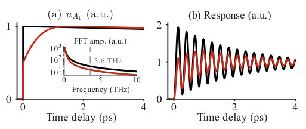
<figcaption class="paper-figure-caption"><b>Fig 3.</b> FIG. 3. Effects of finite-time carrier thermalization on coher- ent phonon dynamics. (a) Instantaneous (black) and partially prompt, slowly rising (red) equilibrium shifts with equal max- ima. A weak long-time decay ensures a well-defined Fourier transform. Inset: Driving-force spectra over the full time win- dow; the dashed line marks the 3.6-THz A1 frequency. (b) Corresponding phonon trajectories with identical frequency and damping.</figcaption>
</figure>
<figure class="paper-figure-card">

<figcaption class="paper-figure-caption"><b>Fig 4.</b> FIG. 4. (a) Measured A1 responsivities (symbols), scaled prethermal force (red), and dipole-weighted JDOS (green) for σ = 0.125 eV. Circles and diamonds denote long- and short-pulse data. Light-gray and magenta diamonds show the measured and sign-inverted 0.485-eV values, joined by a magenta dashed line. The vertical gray dashed line marks Eg ≃0.325 eV; positive force contracts the Te helix. (b) 0.470-eV (blue) and 0.485-eV (purple) traces from Fig. 1, nor- malized to their 4–5 ps plateaus; shaded bands show SE.</figcaption>
</figure>
</div>

<p><strong>Summary.</strong> This work investigates how ultrafast laser excitation generates coherent phonons in semiconductors like Tellurium. By comparing measurements with theoretical models, the authors demonstrate that the phonon response is governed by the specific electronic transitions excited (transition selectivity), rather than the total density of carriers assumed in simpler thermal models. This highlights the importance of non-equilibrium carrier dynamics in ultrafast solid-state physics.</p>
<p><strong>Why it may be interesting.</strong> The focus on non-equilibrium carrier dynamics and the explicit calculation of coupling strengths ($\Delta g_{cv}$) to drive lattice vibrations provides a detailed mechanism for ultrafast energy/momentum transfer, relevant to open quantum systems modeling.</p>
<details>
<summary>Detailed structure</summary>
<p><strong>Main problem.</strong> The paper tests the prevailing understanding of coherent phonon generation in semiconductors, specifically contrasting models based on thermalized carrier populations against those incorporating non-equilibrium dynamics.</p>
<p><strong>Main result.</strong> The coherent phonon amplitude shows weak spectral dependence across the band gap, indicating that transition selectivity, rather than the total thermalized carrier density, controls the phonon generation process.</p>
<p><strong>Method.</strong> The authors combine ultrafast pump-probe spectroscopy measurements with first-principles calculations using DFT to model the effective force driving the coherent lattice vibration.</p>
<p><strong>Model / system.</strong> The study uses Tellurium (Te) as a semiconductor system, investigating the coupling between photoexcited carriers and the fully symmetric $A_1$ optical phonon mode near the electronic band gap.</p>
<p><strong>Key observables.</strong> Coherent amplitude of the $A_1$ phonon mode, spectral dependence of the phonon responsivity, and the calculated prethermal force spectrum.</p>
<p><strong>Important parameters / regimes.</strong> Excitation photon energy tuned across the band gap, and the resulting excited transition state lifetime (estimated in femtoseconds).</p>
<p><strong>Assumptions / limitations.</strong> The analysis assumes the force can be derived from transition-resolved prethermal forces, and DFT calculations often assume a simplified quasi-equilibrium carrier temperature.</p>
<p><strong>Figures summary.</strong> Figures show transient reflectivity traces ($\Delta R/R$) at various pump energies, and plots illustrate the spectral dependence of the $A_1$ mode amplitude and responsivity as a function of photon energy.</p>
<p><strong>Paper structure.</strong> The paper progresses by first presenting experimental measurements showing the spectral dependence, then contrasting these results with predictions from standard models (like DECP theory), and finally proposing and validating a transition-resolved prethermal force model derived from first-principles calculations.</p>
</details>
<details>
<summary>Abstract</summary>
<p>Ultrafast laser excitation of carriers in semiconductors often results in the creation of fully symmetric coherent optical phonons, typically understood in terms of a thermalized transient carrier population. We test this understanding with systematic measurements and first-principles calculations of the photon-energy dependence of ultrafast-laser-driven coherent phonon generation in tellurium, using excitation wavelengths around the electronic band gap. We observe that, contrary to the expectations of models assuming a thermalized carrier population, the coherent amplitude of the fully symmetric $A_1$ mode changes only weakly when tuning wavelength across the band gap. The measured spectral dependence is instead reproduced by a transition-resolved prethermal force weighted by optical matrix elements and band- and momentum-dependent $A_1$ deformation potentials. Fitting this model to the data yields an excited transition state lifetime of a few femtoseconds. These results identify transition selectivity, rather than a thermalized total carrier density, as a key factor controlling coherent-phonon generation in semiconductors excited near a band gap.</p>
</details>
<p><sub><a href="#top">↑ back to top</a></sub></p>

<p><a id="paper-2610.18778"></a></p>
<h3 id="deterministic-and-programmable-generation-of-mechanical-multipartite-entangled-states"><a href="http://arxiv.org/abs/2610.18778v1">Deterministic and programmable generation of mechanical multipartite entangled states</a></h3>
<p><strong>Authors:</strong> Isabelle Franzen, Max-Emanuel Kern, Q. Rumman Rahman, Igor Kladarić, Stefano Marti, Yiwen Chu, Zhi-Yuan Wei, Matteo Fadel<br>
<strong>Type:</strong> both · <strong>Category:</strong> quantum information and computing · <strong>PDF:</strong> <a href="https://arxiv.org/pdf/2610.18778v1">https://arxiv.org/pdf/2610.18778v1</a><br>
<strong>Analysis basis:</strong> full PDF text, analyzed in chunks
<strong>Topic relevance:</strong> 🔥 <code>QC/QI experiment</code> <strong>4/5</strong> · <code>analog quantum simulation</code> <strong>3/5</strong> · <code>methods for driven-dissipative</code> <strong>2/5</strong> · <code>quantum measurements</code> <strong>2/5</strong> · <code>Tavis-Cummings &amp; cavity-many-emitter</code> <strong>1/5</strong> · <code>correlated / nonlocal dissipation</code> <strong>1/5</strong> · <code>driven-dissipative phase transition</code> <strong>1/5</strong> · <code>quantum optics experiment</code> <strong>1/5</strong></p>
<div class="figure-strip-hint">↔ Scroll figures horizontally</div>
<div class="paper-figures-scroll">
<figure class="paper-figure-card">

<figcaption class="paper-figure-caption"><b>Fig 1.</b> FIG. 1. HBAR device and process tomography of the MPS preparation pulses. a) Micrograph of the transmon- HBAR device and b) its schematic illustration. The transmon can be frequency-shifted to become resonant with the individual phonon modes of the HBAR, to which it couples at rate gk. In this work, we only operate within the {|0⟩, |1⟩} subspace of each phonon mode. c) Algorithm to prepare MPS in an HBAR using isometries ˆV and the qubit as an ancilla. d) Pulse shape used for implementing the GHZ isometry Eq. (2). e) Gate sequence used to retrieve process maps. f) Process maps of the ideal, simulated, and experimental isometry Eq. (2) used for GHZ state preparation. See main text for...</figcaption>
</figure>
<figure class="paper-figure-card">
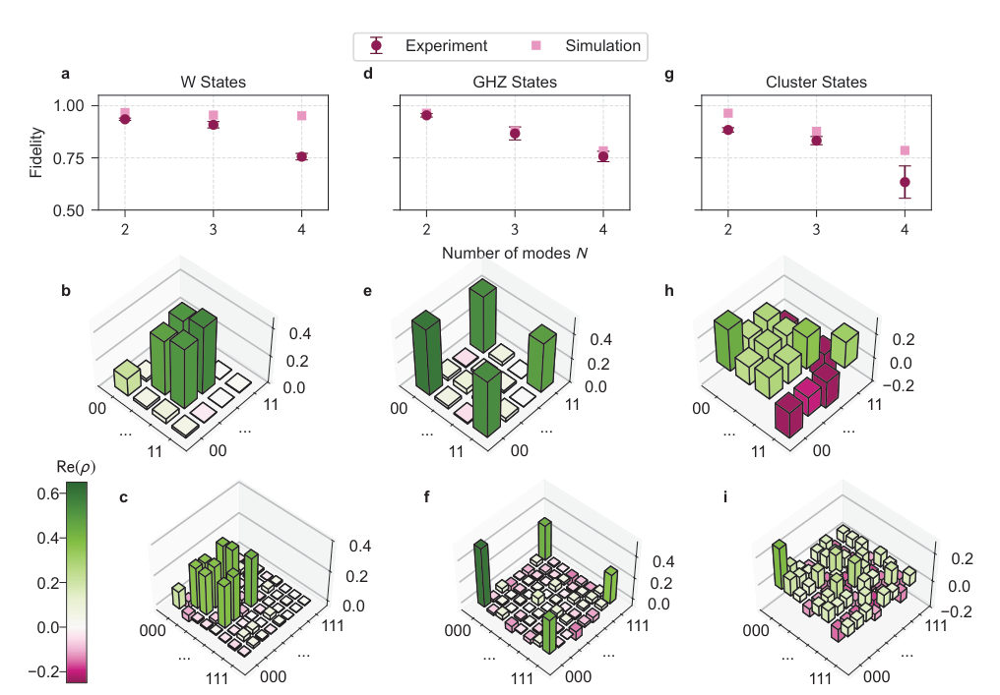
<figcaption class="paper-figure-caption"><b>Fig 2.</b> FIG. 2. Fidelities of the prepared W, GHZ and cluster states, and density matrices. a) Experimental and simulated fidelities for W states prepared on different numbers of modes. b,c) Real part of representative density matrices for W2 and W3 states reconstructed from full state tomography. d,e,f) and g,h,i) show the same for GHZ and cluster states, respectively. Simulations include decoherence during the state-preparation sequence but not the sequential tomographic readout. For W states the decrease of the measured fidelities thus originates mainly from the readout, while for GHZ and cluster states the decrease reflects decoherence during the optimal-control pulses (see main text).</figcaption>
</figure>
<figure class="paper-figure-card">

<figcaption class="paper-figure-caption"><b>Fig 3.</b> FIG. 3. Free evolution of W and GHZ coherences. a) Coherence C(t), normalized to its value at t = 0, of W states with N = 2, 3 modes as a function of the free evolution time t. Lines show fits to Ae−t/τ + B, with the extracted decay times τ given in the legend. b) Pairwise coherences ckl(t) of the W3 state, fitted in the same way. c) Same as panel a, but for GHZ states. Unlike for W states, the GHZ decay rate depends on N. This dependence is here quantitatively explained by local decoherence alone, without any contribution from correlated dephasing (see main text for details).</figcaption>
</figure>
</div>

<p><strong>Summary.</strong> The authors demonstrate a scalable method to deterministically create complex multipartite entangled states (like GHZ and W states) using a superconducting qubit coupled to mechanical resonators. They characterize these states and show how to use them for advanced correlated-noise sensing, establishing a promising route for quantum technologies using massive mechanical objects.</p>
<p><strong>Why it may be interesting.</strong> This work bridges solid-state quantum hardware (superconducting circuits/acoustic resonators) with fundamental quantum information tasks (multipartite entanglement generation and noise characterization), providing a concrete, scalable platform for quantum simulation.</p>
<details>
<summary>Detailed structure</summary>
<p><strong>Main problem.</strong> The paper addresses the challenge of deterministically and programmably generating multipartite entangled states among mechanical phonon modes, moving beyond current limitations to only entangled pairs.</p>
<p><strong>Main result.</strong> They successfully demonstrated the preparation of W, GHZ, and cluster states, and established a method to quantify genuine multipartite entanglement and perform correlated-noise sensing.</p>
<p><strong>Method.</strong> State preparation utilizes optimal-control-engineered isometries between a superconducting transmon qubit and successive phonon modes, followed by full state tomography and entanglement witness measurements.</p>
<p><strong>Model / system.</strong> The physical platform is a superconducting transmon qubit coupled to a High-Overtone Bulk Acoustic Wave Resonator (HBAR) in a circuit quantum acoustics dynamics (cQAD) setup. The dynamics are governed by a Hamiltonian involving qubit, phonon, and coupling terms.</p>
<p><strong>Key observables.</strong> Fidelity ($F$), Genuine Multipartite Entanglement (GME) witnesses ($    ext{Tr}[\hat{W}
ho]$), and coherence decay rates ($\Gamma_c$).</p>
<p><strong>Important parameters / regimes.</strong> Qubit frequency ($\approx 5$ GHz), HBAR mode frequencies ($\approx 5$ GHz), and coupling strengths ($g_k/2\pi \approx 273$ kHz).</p>
<p><strong>Assumptions / limitations.</strong> The state preparation focuses on the computational subspace $\{|0
angle_k, |1
angle_k\}$ for each mode, and the noise analysis relies on modeling local and collective decoherence channels.</p>
<p><strong>Figures summary.</strong> Figures illustrate the HBAR device, the algorithm for MPS preparation using isometries, and the pulse shapes/gate sequences required for state generation.</p>
<p><strong>Paper structure.</strong> The paper first details the experimental protocol for deterministic state preparation (isometries $
ightarrow$ iSWAP $
ightarrow$ state). It then characterizes the states using tomography and demonstrates sensing. A significant portion analyzes the theoretical decoherence of W, GHZ, and cluster states under various noise models.</p>
</details>
<details>
<summary>Abstract</summary>
<p>Multimode mechanical resonators offer a large set of densely packed, long-lived bosonic modes within a single compact device, making them attractive for quantum simulation, quantum information processing, and quantum-enhanced sensing. Many such applications rely on multipartite entanglement, yet deterministic mechanical entanglement has so far been largely limited to pairs of modes. Here we demonstrate the deterministic and programmable preparation of multipartite entangled states among the phonon modes of a high-overtone bulk acoustic wave resonator coupled to a superconducting transmon qubit. By sequentially applying optimal-control-engineered isometries between the qubit and successive modes, we generate matrix product states of bond dimension two, including $W$, Greenberger-Horne-Zeilinger (GHZ), and cluster states. We fully characterize these states via quantum state tomography and certify genuine multipartite entanglement among up to four modes. We further demonstrate correlated-noise sensing by exploiting the complementary decoherence responses of the stored $W$ and GHZ states, isolating inter-mode phase correlations from local decoherence and placing quantitative bounds on collective dephasing. Our results establish a scalable approach to preparing multipartite entangled states in mechanical systems, with promising applications in multiparameter sensing and tests of quantum mechanics with massive objects.</p>
</details>
<p><sub><a href="#top">↑ back to top</a></sub></p>

<p><a id="paper-2610.17228"></a></p>
<h3 id="observation-of-photon-bunching-in-broadband-multimode-thermal-light-enabled-by-temporal-imaging"><a href="http://arxiv.org/abs/2610.17228v1">Observation of Photon Bunching in Broadband Multimode Thermal Light Enabled by Temporal Imaging</a></h3>
<p><strong>Authors:</strong> Filip Sośnicki, Michał Mikołajczyk, Sanjay Kapoor, Dmitri B. Horoshko, Mikhail I. Kolobov, Michał Karpiński<br>
<strong>Type:</strong> experiment · <strong>Category:</strong> other · <strong>PDF:</strong> <a href="https://arxiv.org/pdf/2610.17228v1">https://arxiv.org/pdf/2610.17228v1</a><br>
<strong>Analysis basis:</strong> full PDF text, analyzed in chunks
<strong>Topic relevance:</strong> 🔥 <code>quantum optics experiment</code> <strong>4/5</strong> · <code>Full counting statistics</code> <strong>3/5</strong> · <code>interference shaping light</code> <strong>3/5</strong> · <code>quantum measurements</code> <strong>2/5</strong></p>
<div class="figure-strip-hint">↔ Scroll figures horizontally</div>
<div class="paper-figures-scroll">
<figure class="paper-figure-card">
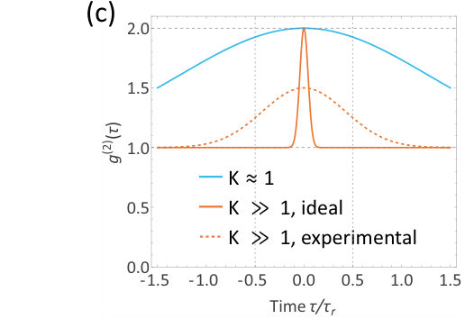
<figcaption class="paper-figure-caption"><b>Fig 1.</b> FIG. 1. Time-resolved second-order autocorrelation measurement. (a) Hanbury Brown and Twiss (HBT) inter- ferometer comprising a 50:50 beamsplitter, two detectors, and a coincidence counter. (b) Temporal imaging (TI) preceding the HBT interferometer magnifies the signal timescale and, consequently, the time-resolved second-order autocorrelation, which reduces the required detector temporal resolution. (c) Normalized second-order coherence g(2)(τ) of thermal light for different numbers of modes K of the measured signal. For K ≈1, the broad correlation feature is resolved (solid blue line), while increasing K progressively narrows the feature (solid orange line). When its width falls below the...</figcaption>
</figure>
<figure class="paper-figure-card">

<figcaption class="paper-figure-caption"><b>Fig 2.</b> FIG. 2. Temporal imaging and experimental setup. (a) Temporal imaging reshapes an optical pulse by increasing its duration while preserving its temporal profile. (b) The temporal imaging system uses two group-delay dispersions (GDDs) together with temporal phase modulation. Each pulse is stretched by the first GDD, after which a quadratic temporal phase is applied. The second GDD then further stretches the pulse, retrieving the pulse’s magnified temporal envelope. It is a pulse-by-pulse process that temporally magnifies the pulses’ envelope without changing the pulse repetition period. (c, d, e) Schematic of the experimental setup. (c) An amplified fs-oscillator produces laser pulses that...</figcaption>
</figure>
<figure class="paper-figure-card">

<figcaption class="paper-figure-caption"><b>Fig 3.</b> FIG. 3. Time-magnified photon count histograms. 660-fold temporal-magnified time-delayed coincident photon count histograms when pumping the SPDC with a spectral bandwidth of (a) 0.2 nm and (b) 0.9 nm, corresponding to Schmidt numbers K = 1.68 and K = 1.02, respectively. The temporally magnified measurement points were binned into 100 ps bins (corresponding to 150 fs through the 660 temporal magnification factor; blue) for high temporal resolution and into 12.5 ns bins (corresponding to the pulse repetition period, which is not temporally magnified; orange) for low temporal resolution. Notice the central peak is narrower as compared to the others in (a), while the same in (b), which shows...</figcaption>
</figure>
<figure class="paper-figure-card">

<figcaption class="paper-figure-caption"><b>Fig 4.</b> FIG. 4. Scaling with the number of modes. Top: Zero- delay values of the second-order coherence function g(2)(τ = 0) for a range of the effective number of modes K, controlled by varying the pump spectral bandwidth, measured with high (blue) and low (orange) temporal resolution. The dashed hor- izontal line indicates the maximal value of 2 expected for the thermal state, while the black solid line shows the de- tector temporal averaging effect as 1 + 1 K . Bottom: Ratio ∆tM/ √</figcaption>
</figure>
</div>

<p><strong>Summary.</strong> This paper introduces a novel technique called pre-detection temporal magnification to overcome the limitations of measuring photon bunching in broadband thermal light. By temporally stretching the optical field before measurement, the authors achieved direct observation of thermal photon bunching on sub-3.5 ps timescales. This establishes a general platform for broadband statistical optics with applications in ultrafast quantum and biophysical imaging.</p>
<p><strong>Why it may be interesting.</strong> This work provides a powerful, general platform for broadband statistical optics, allowing measurements in the time domain that were previously restricted to narrow spectral bandwidths, which is highly relevant for quantum optics characterization.</p>
<details>
<summary>Detailed structure</summary>
<p><strong>Main problem.</strong> The primary challenge is observing the temporal photon bunching characteristic of Bose-Einstein statistics in spectrally broadband, multimode thermal light, which is limited by detector temporal resolution.</p>
<p><strong>Main result.</strong> The authors successfully demonstrated the direct observation of thermal photon bunching on sub-3.5 picosecond timescales, confirming the theoretical value of g^(2)(0) = 2 for broadband sources.</p>
<p><strong>Method.</strong> They developed and implemented a novel technique called pre-detection temporal magnification, using an electro-optic time lens to stretch the optical field before measuring the intensity autocorrelation function in a conventional Hanbury Brown-Twiss (HBT) setup.</p>
<p><strong>Model / system.</strong> The experiment uses broadband multimode thermal light generated via spontaneous parametric down-conversion (SPDC) pumped by femtosecond pulses. The measurement platform is an enhanced HBT interferometer incorporating the temporal magnification stage.</p>
<p><strong>Key observables.</strong> The zero-delay second-order autocorrelation function, g^(2)(0); the effective number of modes (Schmidt number, K); and the time-resolved photon count histograms.</p>
<p><strong>Important parameters / regimes.</strong> Temporal magnification factor of 660; measurement resolution better than 3.5 ps; spectral bandwidth up to 250 GHz.</p>
<p><strong>Assumptions / limitations.</strong> The technique assumes that temporal magnification can effectively stretch the correlation time to resolve features below the detector's intrinsic time-averaging limit.</p>
<p><strong>Figures summary.</strong> Figures illustrate the HBT setup, the temporal imaging scheme (using GDD and phase modulation), and show time-resolved histograms comparing high-resolution (100 ps) vs. low-resolution (ns) measurements of g^(2)(0) for both multimode and near-single-mode cases.</p>
<p><strong>Paper structure.</strong> The paper establishes the theoretical limitation of measuring broadband bunching due to detector resolution, proposes temporal magnification as a solution, details the experimental implementation using SPDC and electro-optic lenses, and finally presents quantitative measurements confirming the expected thermal statistics.</p>
</details>
<details>
<summary>Abstract</summary>
<p>Photons emitted by incoherent sources exhibit temporal bunching, a fundamental manifestation of Bose-Einstein statistics first observed by Hanbury Brown and Twiss (HBT). While intensity correlation measurements originated in astronomy and are now central across quantum technologies, biophysics, and spectroscopy, observing temporal bunching in broadband thermal light remains limited by detector temporal resolution. Conventional approaches - such as streak cameras or optical upconversion - introduce severe trade-offs in efficiency, bandwidth, or setup versatility. Here, we propose and demonstrate a third route: pre-detection temporal magnification of the optical field prior to measuring its intensity autocorrelation function in a conventional HBT setup. Using an electro-optic time lens with a temporal magnification of 660, we resolve the temporal intensity autocorrelation of broadband thermal light generated via non-degenerate spontaneous parametric down-conversion with a bandwidth of 250 GHz. This enables direct observation of thermal photon bunching on sub-3.5 picosecond timescales without narrow spectral filtering, establishing pre-detection temporal imaging as a general platform for broadband statistical optics, with applications spanning ultrafast quantum optics, biophysical imaging, and potentially stellar intensity interferometry.</p>
</details>
<p><sub><a href="#top">↑ back to top</a></sub></p>

<p><a id="paper-2610.17583"></a></p>
<h3 id="coherent-optical-control-of-a-thousand-qubits-in-a-three-dimensional-trapped-ion-crystal"><a href="http://arxiv.org/abs/2610.17583v1">Coherent optical control of a thousand qubits in a three-dimensional trapped-ion crystal</a></h3>
<p><strong>Authors:</strong> Yue Li, Yuxiang Huang, Yi Li, Xu Cheng, Zihan Xie, Qingyuan Mei, Chang-Ling Zou, Ya Wang, Xinhua Peng, Yiheng Lin, Jiangfeng Du<br>
<strong>Type:</strong> experiment · <strong>Category:</strong> other · <strong>PDF:</strong> <a href="https://arxiv.org/pdf/2610.17583v1">https://arxiv.org/pdf/2610.17583v1</a><br>
<strong>Analysis basis:</strong> full PDF text, analyzed in chunks
<strong>Topic relevance:</strong> 🔥 <code>QC/QI experiment</code> <strong>4/5</strong> · <code>analog quantum simulation</code> <strong>3/5</strong> · <code>quantum optics experiment</code> <strong>2/5</strong> · <code>correlated / nonlocal dissipation</code> <strong>1/5</strong> · <code>quantum measurements</code> <strong>1/5</strong></p>
<div class="figure-strip-hint">↔ Scroll figures horizontally</div>
<div class="paper-figures-scroll">
<figure class="paper-figure-card">
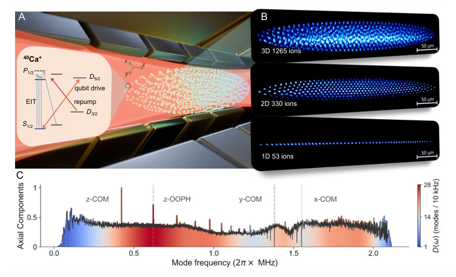
<figcaption class="paper-figure-caption"><b>Fig 1.</b> FIG. 1. Experimental platform and collective vibrational spectrum of a large three-dimensional Coulomb crystal. a, Schematic of the cryogenic Paul trap and optical drives. We utilize multiple 397 nm lasers driving the S1/2 to P1/2 transition, forming parallel resonances for the EIT cooling. A coherent drive laser of 729 nm is applied for either sideband thermometry, coherent Rabi oscillation or Ramsey coherence interferometry, depending on the laser frequency detuning from resonance. b, Fluorescence imaging along the transverse direction gives the ion crystal configuration. Varied confinements along the three directions give linear, planar and cigar-shaped 3D ion crystal configurations,...</figcaption>
</figure>
<figure class="paper-figure-card">

<figcaption class="paper-figure-caption"><b>Fig 2.</b> FIG. 2. Broadband near-ground-state cooling of a dense three-dimensional vibrational spectrum. a, Red-sideband and blue-sideband ex- citation spectra after Doppler cooling and parallel-EIT cooling. Parallel-EIT produces enhanced sideband asymmetry over the entire measured frequency range, demonstrating broadband suppression of motional excitation. b, Mean phonon number estimated from sideband asymmetry after parallel-EIT cooling ¯n = pr/(pb −pr). Swept-frequency (2π×10 kHz steps) measurements from 2π×50 kHz to 2π×2.1 MHz reveal near-ground-state cooling (¯n &lt; 0.3) across most of the vibrational spectrum. The axial center-of-mass and out-of-phase modes are indepen- dently characterized due...</figcaption>
</figure>
<figure class="paper-figure-card">
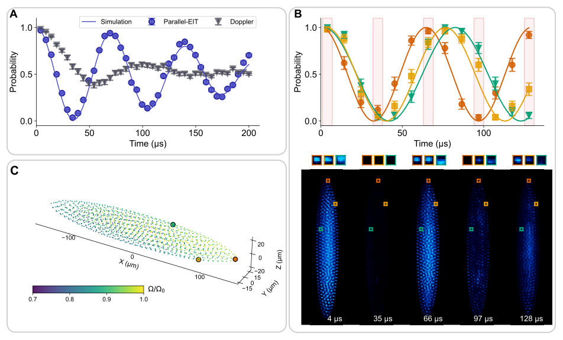
<figcaption class="paper-figure-caption"><b>Fig 3.</b> FIG. 3. Coherent optical control of a three-dimensional ion crystal after cooling. a Global carrier Rabi oscillations measured by collecting fluorescence from the entire ion crystal with a photomultiplier tube (PMT), after conventional Doppler cooling or parallel-EIT cooling. The solid curve represents a simulation for the latter case, based on the above spatial distribution of the Rabi frequency, without incorporating motional-temperature effects or decoherence, and quantitatively reproduces the observed ensemble decay. b Rabi oscillation across the ion crystal. We observe high contrast Rabi oscillation within the ion crystal, from fluorescence images that correspond to the spin population...</figcaption>
</figure>
<figure class="paper-figure-card">
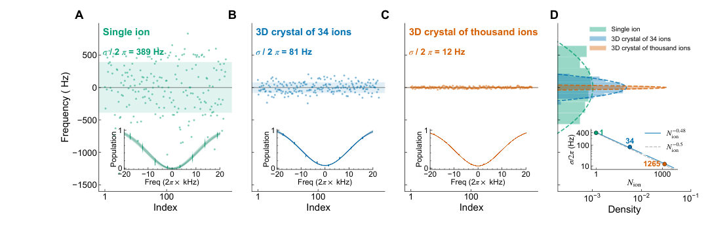
<figcaption class="paper-figure-caption"><b>Fig 4.</b> FIG. 4. Ensemble-enhanced precision in transition spectroscopy. Probability distributions of the extracted optical-transition frequency become progressively narrower with increasing ion number for a single ion (green) in a, a 34-ion crystal (blue) in b, and a 3D Coulomb crystal containing 1,265 ions (orange) in c, measured under identical optical driving conditions. All fitting results are shown in the inset figure. The frequency deviations are referenced to the mean value ⟨f⟩for each dataset, and the corresponding standard deviations are σ/2π = 389 Hz, 81 Hz, and 12 Hz, respectively, with histogram shown in d. The inset of d shows the measured frequency uncertainty σ as a function of ion...</figcaption>
</figure>
</div>

<p><strong>Summary.</strong> This paper reports on the coherent optical control of a large, three-dimensional crystal of trapped ions. The key challenge—the coupling to a dense spectrum of vibrational modes—is overcome by using broadband cooling techniques. The results confirm that the crystal functions as a high-fidelity quantum register, achieving long coherence times and superior frequency precision scaling with ion number.</p>
<p><strong>Why it may be interesting.</strong> This work directly addresses the scaling challenge in trapped-ion quantum computing platforms by demonstrating robust global control despite the presence of a complex, high-dimensional vibrational bath, which is a major bottleneck in scaling trapped-ion quantum processors.</p>
<details>
<summary>Detailed structure</summary>
<p><strong>Main problem.</strong> Achieving coherent optical control and high-precision metrology in large, three-dimensional (3D) trapped-ion crystals, which is challenging due to the coupling of the optical transition to a quasi-continuum bath of collective vibrational modes.</p>
<p><strong>Main result.</strong> The authors successfully cooled thousands of vibrational modes below the single-phonon occupation and demonstrated ensemble optical coherence of 21.6 ms, showing that the dense mode spectrum does not impede global coherent control.</p>
<p><strong>Method.</strong> The experiment utilizes broadband cooling via parallel-EIT techniques, followed by coherent manipulation measurements like Rabi oscillations and Ramsey interferometry on the trapped ion ensemble.</p>
<p><strong>Model / system.</strong> The physical system is a 3D Coulomb crystal of over 1,200 trapped ions. The complexity arises from the dense, quasi-continuous spectrum of $\approx 3,600$ normal modes, which must be addressed for global control.</p>
<p><strong>Key observables.</strong> Ensemble optical coherence time ($T_2$), optical-transition frequency uncertainty ($\sigma/2\pi$), mean phonon occupation ($ar{n}$), and local Rabi frequencies.</p>
<p><strong>Important parameters / regimes.</strong> Ion number ($N_{	ext{ion}} \approx 1,265$), cooling bandwidth (50 kHz to 2.1 MHz), and frequency uncertainty scaling approaching projection-noise limits.</p>
<p><strong>Assumptions / limitations.</strong> The cooling method relies on creating multiple cooling windows via parallel resonances to achieve broadband, sub-Doppler cooling without resolving individual modes.</p>
<p><strong>Figures summary.</strong> Figures illustrate the experimental setup, the dense vibrational spectrum, the broadband cooling process via sideband asymmetry comparison, and the scaling of frequency uncertainty with ion number.</p>
<p><strong>Paper structure.</strong> The paper progresses by first establishing the feasibility of cooling the dense mode spectrum, then demonstrating global coherent control (Rabi oscillations), and finally quantifying the metrological improvement by showing frequency uncertainty scaling towards the standard quantum limit.</p>
</details>
<details>
<summary>Abstract</summary>
<p>Leading quantum platforms are largely limited to one or two dimensions, whereas three-dimensional Coulomb crystals of trapped ions self-assemble into dense qubit arrays with no rearrangement overhead. Coherent optical control of such crystals has nonetheless been out of reach, because the optical transition couples to nearly all $3N$ collective modes, i.e., a thermally occupied quasi-continuum bath. Here we cool about 3,600 modes of a crystal of over 1,200 ions below single-phonon occupation, using a continuous cooling band that spans more than five octaves in vibrational spectrum, from about 50 kHz to 2.1 MHz. The crystal then serves as a register of optical qubits, allowing global initialization, coherent manipulation and collective detection. We demonstrate ensemble optical coherence of 21.6 milliseconds and reduce the optical-transition frequency uncertainty from 389 Hz for a single ion to 12 Hz for over a thousand ions, approaching the expected projection-noise scaling. Our approach could be extended to even larger crystals with phonon-mediated many-body couplings, opening a route towards entanglement-enhanced precision metrology and three-dimensional quantum simulation, particularly with spatial-shaped illumination for region-resolved collective control.</p>
</details>
<p><sub><a href="#top">↑ back to top</a></sub></p>

<p><a id="paper-2610.18482"></a></p>
<h3 id="lifting-quantum-state-discrimination-framework-for-mid-circuit-measurements"><a href="http://arxiv.org/abs/2610.18482v1">Lifting: Quantum State Discrimination Framework for Mid-Circuit Measurements</a></h3>
<p><strong>Authors:</strong> Chi Zhang, Neel Vora, Yilun Xu, Gang Huang, Fan Chen, Lei Jiang<br>
<strong>Type:</strong> experiment · <strong>Category:</strong> quantum information and computing · <strong>PDF:</strong> <a href="https://arxiv.org/pdf/2610.18482v1">https://arxiv.org/pdf/2610.18482v1</a><br>
<strong>Analysis basis:</strong> full PDF text, analyzed in chunks
<strong>Topic relevance:</strong> 🔥 <code>QC/QI experiment</code> <strong>4/5</strong> · <code>quantum measurements</code> <strong>3/5</strong> · <code>methods for driven-dissipative</code> <strong>2/5</strong> · <code>correlated / nonlocal dissipation</code> <strong>1/5</strong> · <code>quantum optics experiment</code> <strong>1/5</strong></p>
<div class="figure-strip-hint">↔ Scroll figures horizontally</div>
<div class="paper-figures-scroll">
<figure class="paper-figure-card">

<figcaption class="paper-figure-caption"><b>Fig 1.</b> FIG. 1. State deterioration reflected in readout-distribution changes in the five-cycle QR-Stabilizer workload. (a) Core circuit with a measured data qubit and a phase-kickback ancilla. Lifting proxy wires are omitted. (b) SPAM references for preparation labels 0 (blue) and 1 (red) on qubit 51 of ibm fez. 10,000 shots per class are sampled from the reference acquisitions for display. (c) Target-readout I–Q distributions ordered from cycles c1 to c5. (d) Equal-prior kernel density estimation (KDE) Bayes-risk estimates comparing the SPAM-0 reference with each ideal-1 target cycle, SPAM-trained NN-based QSD error rates, and transferred digital-error estimates. The curve labeled ibm fez...</figcaption>
</figure>
<figure class="paper-figure-card">

<figcaption class="paper-figure-caption"><b>Fig 2.</b> FIG. 2. Lifting workflow. (a) Context-matched calibration executions prepare reference labels and place encoded readout at the workload’s measurement locations. (b) Local repetition encoding couples the labeled MCM qubit to d −1 auxiliary ancillas initialized to |0⟩. Concurrent readout supplies their joint I–Q readout signals. (c) The d I–Q pairs are concatenated into a 2d-component feature vector. Reference labels supervise neural training, and inference assigns a logical outcome to each target observation. Optional confidence selection retains a subset of observations before reporting retained-shot accuracy.</figcaption>
</figure>
<figure class="paper-figure-card">
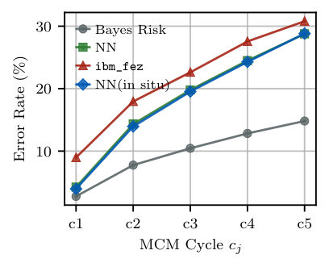
<figcaption class="paper-figure-caption"><b>Fig 3.</b> FIG. 3. Error rates across five MCM cycles: the KDE Bayes- risk estimate, SPAM-trained NN-based QSD, the transferred ibm fez digital estimate from Fig. 1(d), and single-channel NN-based QSD with cycle-matched in situ calibration. The risk curve compares constructed reference–target distribu- tions. The decoder curves evaluate target shots. Contextual calibration changes the training references, while this com- parison retains the single-channel observation space.</figcaption>
</figure>
<figure class="paper-figure-card">

<figcaption class="paper-figure-caption"><b>Fig 4.</b> FIG. 5. Target-only and joint I–Q readout discrimination for d = 2 on ibm fez, using 10,000 shots per preparation la- bel. (a,b) Target and auxiliary (proxy) I–Q scatter, with blue and red denoting reference labels 0 and 1, respectively. (c,d) Signed quadratic-discriminant scores s1 −s0 from the two- dimensional target observations and four-dimensional joint I–Q readout signals. Annotated risks are equal-prior KDE- based estimates of distributional overlap, rather than held-out classifier error rates.</figcaption>
</figure>
<figure class="paper-figure-card">
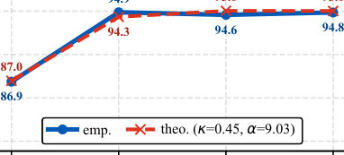
<figcaption class="paper-figure-caption"><b>Fig 5.</b> FIG. 6. IBM Fez assignment accuracy versus encoding dis- tance d, comparing hardware measurements (emp.) with the fitted empirical model in Eq. (18). The curve labeled theo. uses κ = 0.45 and α = 9.03, fitted for the displayed distance sweep.</figcaption>
</figure>
</div>

<p><strong>Summary.</strong> This paper introduces 'Lifting,' a novel framework designed to improve quantum state discrimination for mid-circuit measurements in superconducting quantum computers. It tackles two major issues: the fundamental error limit set by readout noise (Bayes risk) and the practical problem of state deterioration over the course of a quantum circuit. By using repetition encoding and calibrating the neural decoder with context-specific measurements, the framework significantly enhances the reliability of quantum error correction protocols.</p>
<p><strong>Why it may be interesting.</strong> The focus on state deterioration and the necessity of context-aware calibration directly relates to open quantum systems dynamics and error management in physical quantum hardware, which is highly relevant to AMO physics and quantum optics.</p>
<details>
<summary>Detailed structure</summary>
<p><strong>Main problem.</strong> The paper addresses the challenge of accurately performing Quantum State Discrimination (QSD) for Mid-Circuit Measurements (MCMs) in noisy superconducting quantum hardware.</p>
<p><strong>Main result.</strong> The proposed 'Lifting' framework, which combines repetition encoding and in situ calibration, successfully improves QSD accuracy by accounting for state deterioration during circuit execution.</p>
<p><strong>Method.</strong> The authors developed a framework that uses repetition encoding to supply joint I-Q readout signals, processes these signals with a neural network decoder, and trains the decoder using calibration data acquired contextually during the actual measurement workload.</p>
<p><strong>Model / system.</strong> The work is implemented on superconducting quantum processors (e.g., IBM processors) using qubits governed by readout interactions described by a Hamiltonian involving I-Q demodulated signals. The core challenge is distinguishing between the measured analog signals and the underlying discrete quantum states.</p>
<p><strong>Key observables.</strong> Joint In-phase (I) and Quadrature (Q) readout signals, whole-trace accuracy for stabilizer measurements, and final-syndrome correctness for QEC circuits.</p>
<p><strong>Important parameters / regimes.</strong> Bayes risk (fundamental error limit), $T_1$ and $T_2$ decoherence times, and the number of auxiliary qubits used in encoding.</p>
<p><strong>Assumptions / limitations.</strong> The primary assumption is that state deterioration (history dependence) causes the measured I-Q distributions to deviate significantly from static calibration references (SPAM).</p>
<p><strong>Figures summary.</strong> Figures illustrate state deterioration in MCM workloads (like QR-Stabilizer), comparing initial calibration distributions to later, degraded distributions, and show the workflow of the Lifting framework using joint I-Q pairs.</p>
<p><strong>Paper structure.</strong> The paper establishes the limitations of standard NN-based QSD due to noise and state deterioration. It then introduces the Lifting framework, detailing the components: repetition encoding, in situ calibration, and neural decoding. Finally, it validates the framework through experimental results on multiple MCM workloads.</p>
</details>
<details>
<summary>Abstract</summary>
<p>Quantum computing promises new capabilities beyond classical computation. Mid-circuit measurements (MCMs) enable error correction and outcome-dependent control, but their reliability is limited by noise on superconducting hardware. These operations depend on accurate quantum state discrimination (QSD), which assigns measured signals to state labels. Neural network-based (NN-based) QSD improves this assignment, yet its error remains bounded below by the Bayes risk of the available readout distributions. A complementary challenge is state deterioration as successive measurements accumulate and circuit execution advances, making static calibration less representative of the workload. We present Lifting, a QSD framework that addresses both challenges through repetition encoding, neural decoding, and in situ calibration. Encoding supplies joint in-phase and quadrature (I-Q) readout signals from the target and auxiliary qubits, while contextual calibration trains the decoder for the conditions encountered during execution. Our theoretical analysis shows that retaining additional channels from a fixed joint distribution cannot increase Bayes risk and establishes sufficient conditions for contraction of an overlap-based upper bound. Experiments across three IBM processors evaluate the framework on repeated stabilizer measurement, parity-check, and teleportation workloads.</p>
</details>
<p><sub><a href="#top">↑ back to top</a></sub></p>

<p><a id="paper-2610.18500"></a></p>
<h3 id="macroscopic-fluctuation-theory-of-stochastic-systems-undergoing-monitoring"><a href="http://arxiv.org/abs/2610.18500v1">Macroscopic fluctuation theory of stochastic systems undergoing monitoring</a></h3>
<p><strong>Authors:</strong> João Costa, Pedro Ribeiro, Andrea De Luca<br>
<strong>Type:</strong> theory · <strong>Category:</strong> statistical mechanics · <strong>PDF:</strong> <a href="https://arxiv.org/pdf/2610.18500v1">https://arxiv.org/pdf/2610.18500v1</a><br>
<strong>Analysis basis:</strong> full PDF text, analyzed in chunks
<strong>Topic relevance:</strong> 🔥 <code>quantum measurements</code> <strong>4/5</strong> · <code>non-equilibrium universality</code> <strong>3/5</strong> · <code>Full counting statistics</code> <strong>1/5</strong> · <code>Keldysh / 2PI / non-Gaussian methods</code> <strong>1/5</strong> · <code>driven-dissipative phase transition</code> <strong>1/5</strong> · <code>methods for driven-dissipative</code> <strong>1/5</strong></p>
<div class="figure-strip-hint">↔ Scroll figures horizontally</div>
<div class="paper-figures-scroll">
<figure class="paper-figure-card">

<figcaption class="paper-figure-caption"><b>Fig 1.</b> Figure 1: The two saddle-point branches generated by Eq. (46) are plotted for several values of K for SSEP at E = 4, J = 1, γ = 0, and n∗= 1/2. The line intensity decreases as K increases.</figcaption>
</figure>
<figure class="paper-figure-card">

<figcaption class="paper-figure-caption"><b>Fig 2.</b> Figure 2: In panel (a), we show the two ± saddle-point profiles that satisfy condition C for SSEP at E = 4, J = 1, γ = 0, and n∗= 1/2. In panel (b), we plot the corresponding effective potential Vγ,J(ρ), marking the value of K that satisfies condition C in yellow. K fixes the turning points of the saddle-point profiles, which we show in red and blue.</figcaption>
</figure>
<figure class="paper-figure-card">
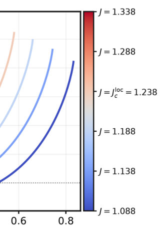
<figcaption class="paper-figure-caption"><b>Fig 3.</b> Figure 4: Qγ,J(K) −Qγ,J(V∗) vs K −V∗, for different values of J, near the local critical current. At J = Jloc c (light orange), the perturbative condition is Q′ γ,Jloc c (V∗) = Gγ,Jloc c (V∗) = 0. For J &lt; Jloc c , the global minimum of Qγ,J(K) is</figcaption>
</figure>
<figure class="paper-figure-card">
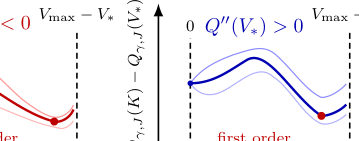
<figcaption class="paper-figure-caption"><b>Fig 4.</b> Figure 5: Possible scenarios for the behavior of Qγ,J(K) −Qγ,J(V∗) as a function of K −V∗at J = Jloc c , where Q′(V∗) = G(V∗) = 0. The lighter curves sketch the profiles immediately before and after the transition. Panels (a) and (b) show cases when the local criterion (sign of Q′′(V∗)) is sufficient to detect the order of the transition; panel (c) shows a case when a distant minimum can still make the transition first order even though Q′′(V∗) &gt; 0; this clarifies why Q′′(V∗) &gt; 0 is a necessary but not sufficient condition for a putative second order transition.</figcaption>
</figure>
<figure class="paper-figure-card">
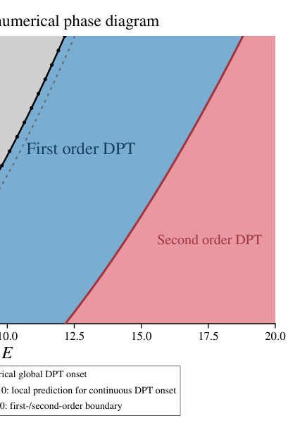
<figcaption class="paper-figure-caption"><b>Fig 5.</b> Figure 6: Nature of the putative critical point (J = Jc) for the particle-hole- symmetric KLS model at ϵ = 0.6 and δ = 0. Gray denotes the region with no DPT, while blue and red indicate first- and second-order DPTs, respectively. The solid black curve corresponds to Jc = 0. This curve is distinct from the gray dotted line, Jloc c = 0, which gives the local condition for the onset of a DPT. The solid red curve represents our derived condition B∗(E, γ) = 0 for the boundary between first- and second-order transitions, in agreement with the numerical results.</figcaption>
</figure>
</div>

<p><strong>Summary.</strong> This paper extends Macroscopic Fluctuation Theory to study stochastic lattice gases under continuous monitoring. It shows that measurement fundamentally alters the system's effective dynamics by adding a confining term to the action. The work provides quantitative predictions about how monitoring affects phase transitions and current statistics in driven diffusive systems.</p>
<p><strong>Why it may be interesting.</strong> The framework of MFT and large-deviation principles is central to non-equilibrium statistical mechanics, providing tools to analyze how external measurements or monitoring affect the steady-state and fluctuation properties of complex many-body systems.</p>
<details>
<summary>Detailed structure</summary>
<p><strong>Main problem.</strong> Developing a macroscopic fluctuation theory for diffusive classical lattice gases subjected to continuous coarse-grained monitoring.</p>
<p><strong>Main result.</strong> Observation adds a quadratic confining term to the MFT action, and for 1D models, monitoring can suppress dynamical phase transitions and change their order.</p>
<p><strong>Method.</strong> The authors use Macroscopic Fluctuation Theory (MFT) in the typical-outcome (quenched) regime to derive large-deviation principles for current fluctuations.</p>
<p><strong>Model / system.</strong> The system is a diffusive classical lattice gas on a bounded domain, modeled as a continuous time Markov process. The analysis is performed in the hydrodynamic limit, yielding a continuum description governed by the continuity equation.</p>
<p><strong>Key observables.</strong> The current large-deviation function, the MFT action, and the cumulants of the current distribution.</p>
<p><strong>Important parameters / regimes.</strong> The measurement strength (monitoring), the dimensionality ($d$), and the mobility of the system.</p>
<p><strong>Assumptions / limitations.</strong> The analysis relies on the coarse-grained nature of the measurement (mesoscopic averaging) and treating measurements in the typical-outcome (quenched) regime.</p>
<p><strong>Figures summary.</strong> Figure 19 illustrates the convergence of the saddle-point density and the left boundary profile for a monitored SSEP, showing the functional form of the rate function $\phi_\gamma(J)$.</p>
<p><strong>Paper structure.</strong> The paper builds from reviewing MFT principles and defining coarse-grained measurements, applying this framework to derive the rate functional, and finally analyzing specific boundary effects in the strong-measurement limit.</p>
</details>
<details>
<summary>Abstract</summary>
<p>We develop a macroscopic fluctuation theory for diffusive classical lattice gases subject to continuous coarse-grained monitoring. Treating measurements in the typical-outcome (quenched) regime, we show that observation adds a quadratic confining term to the MFT action that pins the density to its hydrodynamic profile. We derive sufficient conditions under which, in the presence of monitoring, the current large-deviation function remains convex, the additivity principle holds, and dynamical phase transitions are excluded. For particle-hole-symmetric one-dimensional models we find that monitoring suppresses dynamical phase transitions and can change their order from second to first, as we demonstrate in the Katz--Lebowitz--Spohn model. In the strong-measurement limit, we find that the current distribution becomes Gaussian and determine the scaling of its cumulants: they follow simple power laws when the mobility remains nonzero throughout the system, but exhibit anomalous logarithmic scaling when the mobility vanishes at the boundaries.</p>
</details>
<p><sub><a href="#top">↑ back to top</a></sub></p>

<p><a id="paper-2610.18000"></a></p>
<h3 id="development-and-experimental-implementation-of-noise-characterisation-techniques-on-a-superconducting-quantum-processor"><a href="http://arxiv.org/abs/2610.18000v1">Development and experimental implementation of noise characterisation techniques on a superconducting quantum processor</a></h3>
<p><strong>Authors:</strong> Nelson M. M. Fernández, Francesco Grieco, Hetta Vappula, Stefano Mangini, Boris Sokolov, Elsi-Mari Borrelli, Matteo A. C. Rossi, Sergey N. Filippov, N. Walter Talarico<br>
<strong>Type:</strong> experiment · <strong>Category:</strong> quantum information and computing · <strong>PDF:</strong> <a href="https://arxiv.org/pdf/2610.18000v1">https://arxiv.org/pdf/2610.18000v1</a><br>
<strong>Analysis basis:</strong> full PDF text, analyzed in chunks
<strong>Topic relevance:</strong> 🔥 <code>QC/QI experiment</code> <strong>4/5</strong> · <code>correlated / nonlocal dissipation</code> <strong>2/5</strong> · <code>methods for driven-dissipative</code> <strong>2/5</strong> · <code>quantum measurements</code> <strong>2/5</strong></p>
<div class="figure-strip-hint">↔ Scroll figures horizontally</div>
<div class="paper-figures-scroll">
<figure class="paper-figure-card">

<figcaption class="paper-figure-caption"><b>Fig 1.</b> FIG. 1: Coupling map and typical readout and CZ-gate fidelities of VTT Q50 [45]. Although the physical hard- ware topology labels start at 1, the software implemen- tation adopts 0-based indexing. The qubit labels are otherwise contiguous, except for the missing QB32. Ac- cordingly, the Qiskit backend reports 53 rather than 54 qubits, accounting for the deactivated qubit.</figcaption>
</figure>
<figure class="paper-figure-card">

<figcaption class="paper-figure-caption"><b>Fig 2.</b> FIG. 2: Cumulative distribution of PRX-gate, CZ-gate, and readout (RO) infidelities across VTT Q50 [45]. Each curve is the empirical distribution over all calibrated qubits, or all calibrated couplers, of the calibration set of 2026-08-21; the medians are 1.2×10−3, 9.6×10−3 and 2.9 × 10−2 respectively.</figcaption>
</figure>
<figure class="paper-figure-card">

<figcaption class="paper-figure-caption"><b>Fig 3.</b> FIG. 3: Noise learning protocol. After selecting the active qubit layout for the characterisation experiment, the cycle benchmarking (CB) protocol is used to determine the Pauli fidelity estimates required for fitting the noise model parameters.</figcaption>
</figure>
<figure class="paper-figure-card">

<figcaption class="paper-figure-caption"><b>Fig 4.</b> FIG. 4: Structure of the cycle benchmarking circuit for a depth-two block consisting of two layers of concurrent noisy CZ gates interleaved by single-qubit gates and pre- ceded by state-preparation gates Bi. In general, after a depth-d block, the inverse of the state preparation basis gates is applied, followed by measurement twirling gates Mi, randomly sampled from identity I and X gates. Fi- nally, all qubits are measured.</figcaption>
</figure>
<figure class="paper-figure-card">
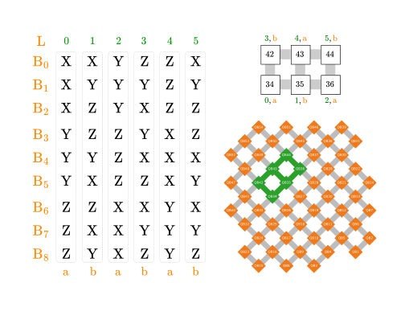
<figcaption class="paper-figure-caption"><b>Fig 5.</b> FIG. 5: Basis selection protocol: Given the processor coupling map and the selected physical-qubit layout, if the qubit ordering satisfies the condition of [24, Theorem SIV.1], then there exist nine bases such that for each pair of physically connected qubits, the entire set {X, Y, Z}⊗2</figcaption>
</figure>
</div>

<p><strong>Summary.</strong> This paper details the development and experimental implementation of advanced noise characterization techniques on a superconducting quantum processor. By refining cycle benchmarking and tensor-network tomography, the authors map the noise structure, track noise drift, and validate noise models. This work is crucial for understanding hardware limitations and scaling quantum computation.</p>
<p><strong>Why it may be interesting.</strong> This work provides concrete, hardware-level techniques for quantifying noise sources in superconducting qubits, which is foundational knowledge for designing fault-tolerant quantum computation protocols.</p>
<details>
<summary>Detailed structure</summary>
<p><strong>Main problem.</strong> The paper addresses the critical need to accurately characterize noise in superconducting quantum processors to enable effective error mitigation and establish reliable performance bounds.</p>
<p><strong>Main result.</strong> The developed noise characterization methods allow for the extraction of approximate sublayer noise models, enabling the assessment of noise stability and providing estimates for the size of noise-mitigated circuits.</p>
<p><strong>Method.</strong> The authors revise cycle-benchmarking protocols and extend tensor-network tomography to map the noise structure, track noise drift, and validate learned models against experimental measurements.</p>
<p><strong>Model / system.</strong> The study uses a superconducting quantum processor with a square-lattice topology (VTT Q50) and models the noise using a Sparse Pauli–Lindblad (SPL) model for entangling gates.</p>
<p><strong>Key observables.</strong> Single qubit readout fidelity, CZ Gate fidelity, Pauli fidelities ($f_a$), and total estimation error in benchmark circuits.</p>
<p><strong>Important parameters / regimes.</strong> Noise parameter drift, circuit depth (L=15), and width (N=50) for error estimation.</p>
<p><strong>Assumptions / limitations.</strong> The noise is assumed to be Pauli noise, and the analysis involves trade-offs between the efficiency and accuracy of different noise learning protocols.</p>
<p><strong>Figures summary.</strong> Figures show coupling maps, gate/readout infidelities across the processor, and decay curves comparing measured vs. predicted signal decay for various observables on different lattice sizes.</p>
<p><strong>Paper structure.</strong> The paper proceeds by detailing device specifications, then presenting the theory and modifications for cycle benchmarking and tensor-network tomography, followed by validation on benchmark circuits and final experimental results.</p>
</details>
<details>
<summary>Abstract</summary>
<p>Noise characterisation not only enables error mitigation but also provides valuable information about the intrinsic performance of a quantum device, identifying dominant error contributions and bounding noise stability well beyond the aggregated calibration data. Deploying such methods on a specific hardware topology must combine efficiency and accuracy, assess noise stability, and validate the reconstructed noise model. Here we develop and implement these methods on a superconducting processor with square-lattice topology. First, we revise the cycle-benchmarking protocol and reduce the bias arising from unlearnable degrees of freedom via a regularised cost function. Second, we extend a previously developed tensor-network tomography method to match the device layout and show how its accuracy can be improved by repeated layer execution. Both methods allow approximate sublayer noise models to be extracted from parent ones. Using noise characterisation as a tool, we map the noise structure, track drift, and validate the adequacy of the learnt noise models against experimentally observed noisy estimations in benchmark physical and chemistry circuits. These results inform further improvements in the underlying technology and provide estimates of the size of noise-mitigated circuits that the device can support.</p>
</details>
<p><sub><a href="#top">↑ back to top</a></sub></p>

<p><a id="paper-2610.17219"></a></p>
<h3 id="fermionic-non-gaussianity-via-computable-measures-and-experimentally-accessible-bounds"><a href="http://arxiv.org/abs/2610.17219v1">Fermionic non-Gaussianity via computable measures and experimentally accessible bounds</a></h3>
<p><strong>Authors:</strong> Leela Ganesh Chandra Lakkaraju, Naga Dileep Varikuti, Philipp Hauke<br>
<strong>Type:</strong> theory · <strong>Category:</strong> strongly correlated electrons · <strong>PDF:</strong> <a href="https://arxiv.org/pdf/2610.17219v1">https://arxiv.org/pdf/2610.17219v1</a><br>
<strong>Analysis basis:</strong> full PDF text, analyzed in chunks
<strong>Topic relevance:</strong> 🔥 <code>analog quantum simulation</code> <strong>4/5</strong> · <code>Keldysh / 2PI / non-Gaussian methods</code> <strong>2/5</strong> · <code>methods for driven-dissipative</code> <strong>1/5</strong></p>
<div class="figure-strip-hint">↔ Scroll figures horizontally</div>
<div class="paper-figures-scroll">
<figure class="paper-figure-card">

<figcaption class="paper-figure-caption"><b>Fig 1.</b> FIG. 1. Non-Gaussianity of the ground state of the Fermi–Hubbard chain (solid curves), quantified by the distance to the closest Gaus- sian state (D(|ψ⟩)) obtained via the iterative procedure of Theo- rem 1. The N fermionic modes are at [for even N, panel (a)] or near half-filling [odd N, (b)]. For all N considered, the non-Gaussianity increases with U/t. The lower bound obtained in Theorem 4 (dash- dotted) provides a genuine witness of non-Gaussianity at intermedi- ate and strong interactions and becomes tighter with increasing N.</figcaption>
</figure>
<figure class="paper-figure-card">

<figcaption class="paper-figure-caption"><b>Fig 2.</b> FIG. 2. Lower bounds on the non-Gaussianity of the Fermi–Hubbard ground state at half filling, for N = 8 (light) and N = 10 (dark) sites. Shown are the geometric measure D(|ψ⟩) obtained from the iterative procedure of Theorem 1 (crosses), the lower bound DL of Theorem 4 (stars), and the antiflatness bound F1(|ψ⟩)/4n (circles), with n = 2N the number of fermionic modes. Below U/t ≈5.0 for N = 10 and U/t ≈6.2 for N = 8, DL vanishes and antiflatness supplies the only non-trivial bound; beyond these thresholds the or- dering reverses. Antiflatness cannot exceed 1/4 by construction and is almost independent of system size; the two circle curves nearly coincide, whereas DL keeps tracking the...</figcaption>
</figure>
</div>

<p><strong>Summary.</strong> This paper introduces a geometric measure, the fidelity distance, to quantify fermionic non-Gaussianity in interacting quantum systems. It develops an iterative algorithm to compute this measure, providing a scalable route applicable even at strong coupling. The resulting witness relies only on measurable two- and four-point correlators, making it highly relevant for experimental quantum simulation platforms.</p>
<p><strong>Why it may be interesting.</strong> This work provides a powerful, non-perturbative diagnostic tool for characterizing quantum correlations in strongly correlated systems, which is highly relevant for understanding quantum simulation results from platforms like ultracold atoms or superconducting circuits.</p>
<details>
<summary>Detailed structure</summary>
<p><strong>Main problem.</strong> The paper addresses the challenge of quantifying fermionic non-Gaussianity in interacting quantum many-body systems, especially when perturbative methods fail.</p>
<p><strong>Main result.</strong> They introduce a geometric measure, the fidelity distance, and derive a computable witness involving only two- and four-point fermionic correlators that remains accurate even at strong coupling.</p>
<p><strong>Method.</strong> The core method involves defining the non-Gaussianity via the fidelity distance to the Gaussian manifold and developing an iterative formalism to numerically compute this distance.</p>
<p><strong>Model / system.</strong> The primary model used for benchmarking is the Fermi-Hubbard model, which describes interacting fermions. The system's dynamics are analyzed by comparing the true state to the manifold of Gaussian states.</p>
<p><strong>Key observables.</strong> Fidelity distance $D(
ho)$, two- and four-point fermionic correlators, and the ratio $U/t$ (interaction strength to hopping).</p>
<p><strong>Important parameters / regimes.</strong> The interaction strength $U/t$, the regularization parameter $\epsilon$, and the system size $N$.</p>
<p><strong>Assumptions / limitations.</strong> The Gaussian manifold is non-convex, and the derived bounds are shown to be faithful monotones of the resource theory, though the optimization process might converge to local minima.</p>
<p><strong>Figures summary.</strong> Figures illustrate the non-Gaussianity $D(|\psi
angle)$ vs. $U/t$ for the Fermi-Hubbard chain, and compare various derived bounds ($D_G, D_L, D_U$) against each other.</p>
<p><strong>Paper structure.</strong> The paper progresses by defining the geometric measure, developing the iterative numerical formalism, deriving a sharpened operator Jensen inequality to create an experimentally accessible witness, and finally benchmarking this witness on the Fermi-Hubbard model.</p>
</details>
<details>
<summary>Abstract</summary>
<p>Interacting fermions owe both their non-trivial correlations and their computational power to their departure from Gaussianity. Yet, quantifying that departure geometrically faces two challenges: the Gaussian manifold is non-convex, and perturbative treatments are confined to weak interactions. Here, we introduce a geometric measure of fermionic non-Gaussianity, the fidelity distance of a target state to the manifold of fermionic Gaussian states. We construct an iteration formalism to numerically access it, applicable also at strong coupling. Further, we prove a sharpened operator Jensen inequality, of interest in its own right. We use it to derive a witness that involves only two- and four-point fermionic correlators. Numerical benchmarks on the one-dimensional Fermi--Hubbard model show that the quality of the witness improves with system size and, for strong coupling, is tighter than antiflatness. Our results open a scalable route to charting non-Gaussianity of strongly-interacting fermionic quantum simulators.</p>
</details>
<p><sub><a href="#top">↑ back to top</a></sub></p>

<p><a id="paper-2610.18203"></a></p>
<h3 id="optical-parametric-amplification-of-spatiotemporal-optical-vortices"><a href="http://arxiv.org/abs/2610.18203v1">Optical parametric amplification of spatiotemporal optical vortices</a></h3>
<p><strong>Authors:</strong> Houan Teng, Chenhao Wan, Qiwen Zhan<br>
<strong>Type:</strong> both · <strong>Category:</strong> other · <strong>PDF:</strong> <a href="https://arxiv.org/pdf/2610.18203v1">https://arxiv.org/pdf/2610.18203v1</a><br>
<strong>Analysis basis:</strong> full PDF text, analyzed in chunks
<strong>Topic relevance:</strong> 🔥 <code>interference shaping light</code> <strong>4/5</strong> · <code>quantum optics experiment</code> <strong>3/5</strong></p>
<div class="figure-strip-hint">↔ Scroll figures horizontally</div>
<div class="paper-figures-scroll">
<figure class="paper-figure-card">
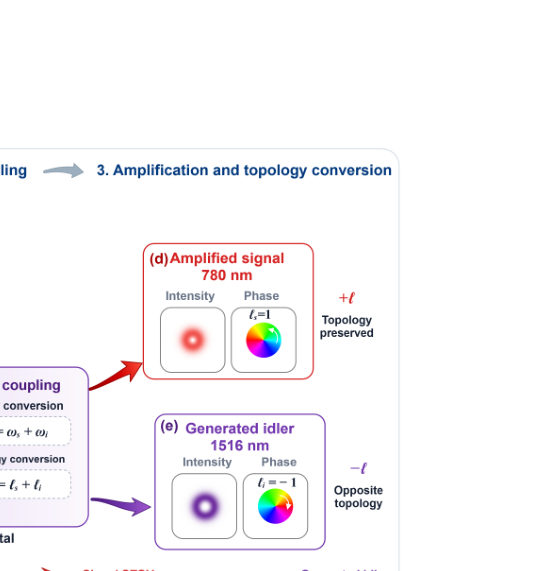
<figcaption class="paper-figure-caption"><b>Fig 1.</b> Fig. 1 Conceptual illustration of topology-preserving optical parametric amplification of spatiotemporal optical vortices. A spatiotemporal optical vortex interacts with a coherent pump field through a second-order nonlinear process, where optical parametric amplification enables simultaneous energy scaling and topological information transfer. (a,b) Complex-field representations of the Gaussian pump and the input STOV signal, respectively. The pump provides nonlinear energy transfer, while the signal carries a transverse optical topology encoded in the coupled spatiotemporal domain. (c) Schematic of the three-wave mixing interaction, where the pump, signal and idler fields are coherently...</figcaption>
</figure>
<figure class="paper-figure-card">

<figcaption class="paper-figure-caption"><b>Fig 2.</b> Fig. 2 Experimental platform for generation, amplification and characterization of spatiotemporal optical vortices. A two-stage OPA system is developed for STOV generation, amplification and complex field characterization. A broadband seed generated through supercontinuum generation (i) is first amplified in OPA1 (iii) to provide sufficient energy for spatiotemporal modulation and a coherent idler reference. The pump pulse is generated through second-harmonic generation (ii). A programmable pulse shaper (iv) consisting of a grating, cylindrical lens and spatial light modulator introduces spatial-spectral coupling to generate STOVs with controlled topological charge. The structured pulse is...</figcaption>
</figure>
<figure class="paper-figure-card">

<figcaption class="paper-figure-caption"><b>Fig 3.</b> Fig. 3 Coherent amplification and topology preservation of spatiotemporal optical vortices. (a, b) Simulated and experimentally reconstructed complex fields of a STOV with ℓ=1 before and after OPA. (c, d) Corresponding results for a STOV with ℓ=2. For each case, intensity and phase distributions are shown in both the x−ω and x−t domains, linked by Fourier transformation. The amplified fields retain the phase singularities and topological structure of the input STOVs, with measured energy gains of approximately 63× and 58× for ℓ=1 and ℓ=2, respectively.</figcaption>
</figure>
<figure class="paper-figure-card">

<figcaption class="paper-figure-caption"><b>Fig 4.</b> Fig. 4 | Phase-conjugated topology transfer in generated idler STOVs. (a,b) Simulated and experimentally reconstructed complex fields of idler STOVs generated from input signal vortices with and , respectively. The idler fields exhibit reversed phase winding and opposite topological charges ( and ) in both the x−ω and x−t domains, demonstrating phase-conjugated transfer of spatiotemporal topology through nonlinear frequency conversion.</figcaption>
</figure>
</div>

<p><strong>Summary.</strong> This paper presents the theoretical and experimental demonstration of using Optical Parametric Amplification (OPA) to amplify Spatiotemporal Optical Vortices (STOVs). The authors show that OPA can significantly boost the signal energy while faithfully preserving the complex spatiotemporal topological structure. This establishes OPA as a powerful, tunable platform for engineering high-intensity, structured light beams.</p>
<p><strong>Why it may be interesting.</strong> This work is highly relevant to quantum optics and open quantum systems because it treats structured light (vortices) as carriers of quantum information (topological charge) that can be amplified and manipulated coherently using nonlinear parametric processes, bridging quantum optics with high-intensity light applications.</p>
<details>
<summary>Detailed structure</summary>
<p><strong>Main problem.</strong> The primary goal is to demonstrate the theoretical analysis and experimental realization of amplifying Spatiotemporal Optical Vortices (STOVs) using Optical Parametric Amplification (OPA) while maintaining their complex spatiotemporal structure.</p>
<p><strong>Main result.</strong> The study successfully shows that OPA can coherently amplify STOVs by a factor of $\sim 60$ while robustly preserving their topological charges. Furthermore, the generated idler beam inherits a phase-conjugated STOV topology.</p>
<p><strong>Method.</strong> The research combines theoretical modeling (using coupled-wave equations and conservation laws) with advanced experimental techniques, specifically using programmable spatiotemporal pulse shapers and spatially resolved spectral interferometry for characterization.</p>
<p><strong>Model / system.</strong> The physical system is the nonlinear interaction within an OPA setup, involving a pump, signal, and idler field. STOVs are structured light characterized by phase singularities in the spatiotemporal domain, coupling spatial and temporal dimensions.</p>
<p><strong>Key observables.</strong> Signal energy enhancement factor ($\sim 60$-fold), topological charge ($\ell$), phase singularity location, and the phase-conjugated topology of the idler field.</p>
<p><strong>Important parameters / regimes.</strong> Wavelength tunability (visible to near-infrared), topological charge ($\ell$), and the nonlinear coupling constant ($\chi^{(2)}$).</p>
<p><strong>Assumptions / limitations.</strong> The analysis often assumes perfect phase matching ($\Delta k = 0$) for analytical derivations, and the process is modeled as an ideal parametric interaction.</p>
<p><strong>Figures summary.</strong> Figures illustrate the conceptual process of topology-preserving OPA, showing the setup, the amplification of $\ell=1$ and $\ell=2$ STOVs with preserved singularities, and the resulting phase-conjugated topology transfer to the idler field.</p>
<p><strong>Paper structure.</strong> The paper progresses from defining the problem (amplification and tunability of STOVs) to presenting the theoretical framework (coupled-wave equations) and then detailing the experimental realization using a two-stage OPA platform for characterization and demonstration of topology transfer.</p>
</details>
<details>
<summary>Abstract</summary>
<p>Spatiotemporal optical vortices (STOVs) are structured light featuring a phase singularity in the spatiotemporal domain, exhibiting unique topology that couples spatial and temporal dimensions. To date, amplification of STOVs remains unexplored, and their wavelength tunability is limited by available light sources. In this work, we present the theoretical analysis and experimental demonstration of optical parametric amplification (OPA) of STOVs. The pulse energy of the STOV signal is enhanced by a factor of 60, while its spatiotemporal structure is robustly preserved. The generated idler inherits the phase-conjugated STOV topology with the opposite topological charge, governed by simultaneous conservation of energy, linear momentum, and spatiotemporal orbital angular momentum. The intrinsic wavelength-conversion capability of OPA further provides a route towards spectrally tunable STOV generation, spanning from visible to near-infrared wavelength regimes. This work paves the way toward further development of multi-stage amplification architectures, facilitating applications of wavelength-tunable spatiotemporally structured light at ultrahigh intensities.</p>
</details>
<p><sub><a href="#top">↑ back to top</a></sub></p>

<p><a id="paper-2610.17796"></a></p>
<h3 id="skin-phase-transition-of-a-skyrmion-in-a-ferromagnetic-superfluid"><a href="http://arxiv.org/abs/2610.17796v1">Skin phase transition of a skyrmion in a ferromagnetic superfluid</a></h3>
<p><strong>Authors:</strong> Wooyoung Yun, Se Kwon Kim, Hiromitsu Takeuchi<br>
<strong>Type:</strong> theory · <strong>Category:</strong> quantum gases · <strong>PDF:</strong> <a href="https://arxiv.org/pdf/2610.17796v1">https://arxiv.org/pdf/2610.17796v1</a><br>
<strong>Analysis basis:</strong> full PDF text, analyzed in chunks
<strong>Topic relevance:</strong> 🔥 <code>analog quantum simulation</code> <strong>4/5</strong> · <code>Keldysh / 2PI / non-Gaussian methods</code> <strong>1/5</strong> · <code>driven-dissipative phase transition</code> <strong>1/5</strong> · <code>methods for driven-dissipative</code> <strong>1/5</strong></p>
<div class="figure-strip-hint">↔ Scroll figures horizontally</div>
<div class="paper-figures-scroll">
<figure class="paper-figure-card">

<figcaption class="paper-figure-caption"><b>Fig 1.</b> FIG. 1. Plot of the order parameter amplitude fm(r) (solid lines) and the cross section of |Ψm(r)| (markers) for (a) q/µ = −0.14 and (b) q/µ = −0.90. Markers show |Ψm(x, 0)| extracted from the two-dimensional simulation. In (a), the skyrmion has the BA-skin structure with nonzero f0 at the domain wall. On the other hand, in (b), the skyrmion has the AF-skin structure with vanishing f0(r) and in-plane magnetization. (c-d) are the spin configuration for (c) q/µ = −0.14 and (d) q/µ = −0.90. Each arrow represents the spin direction, magnitude and the color represents the z-component of the spin sz.</figcaption>
</figure>
<figure class="paper-figure-card">
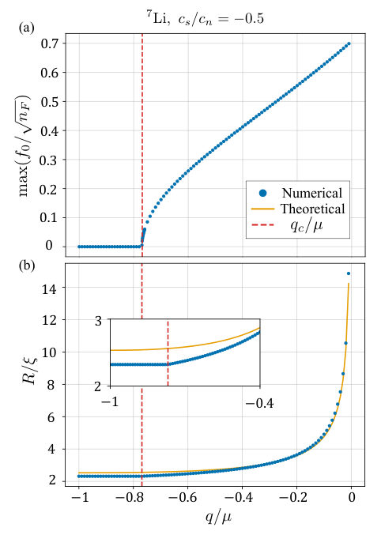
<figcaption class="paper-figure-caption"><b>Fig 2.</b> FIG. 2. Numerical results for 7Li condensate. (a) The plot of max(f0/√nF ) as a function of q/µ. The blue dots are the numerical values obtained by solving Eqs. (10,11) and the red dashed line is the critical value qc/µ ≈−0.769 obtained from BdG analysis. (b) The plots of skyrmion radius. The blue dots are the numerical values and the yellow solid line is the solution of Eq. (47), which is the theoretical prediction from hydrostatic approximation. The inset enlarges the vicinity of the critical point.</figcaption>
</figure>
<figure class="paper-figure-card">

<figcaption class="paper-figure-caption"><b>Fig 3.</b> FIG. 3. (Upper) The spectrum of ˜ϵ+ and (lower) qc/µ as a function of l, respectively, for cs/cn = −0.5.</figcaption>
</figure>
<figure class="paper-figure-card">

<figcaption class="paper-figure-caption"><b>Fig 4.</b> FIG. 4. The phase diagram for −1 &lt; cs/cn &lt; 0 and −1 &lt; q/µ &lt; 0 with p = 0. The blue dots represent the BA-skin phase, the yellow triangles represent the AF- skin phase, and the green inverted triangles represent the normal-core vortex phase. The red dashed curve is the criti- cal value for BA-AF transition, qc/µ [Eq. (41)], the purple dash-dotted line is the critical value for AF-Nc transition [Eq. (54)]. The straight black dotted line parallel to cs/cn- axis is qc1 [Eq. (58)], parallel to q/µ-axis is the cs/cn = γc [Eq. (59)]. The black dotted curve is the qc2, which is ob- tained numerically by parameter scanning (see the discussion below Eq. (59)). The cyan solid curve is the numerically-...</figcaption>
</figure>
<figure class="paper-figure-card">

<figcaption class="paper-figure-caption"><b>Fig 5.</b> FIG. 6. (Upper) The spectrum of ϵ0 and (lower) qc1/µ as a function of l, respectively.</figcaption>
</figure>
</div>

<p><strong>Summary.</strong> This theoretical study maps out the complex phase diagram of skyrmion structures in a ferromagnetic spin-1 Bose-Einstein Condensate. By analyzing the Gross-Pitaevskii equation and its stability spectrum, the authors predict continuous transitions between BA-skin and AF-skin phases, alongside a discontinuous transition to a normal-core vortex state. This work advances the understanding of topological matter in quantum gases.</p>
<p><strong>Why it may be interesting.</strong> This work is highly relevant to AMO physics as it explores topological defects (skyrmions) in ultracold atomic systems (BECs). The detailed phase diagram mapping and stability analysis provide concrete, predictive tools for controlling exotic quantum states in magnetic superfluids.</p>
<details>
<summary>Detailed structure</summary>
<p><strong>Main problem.</strong> The paper investigates the skin phase transition of a skyrmion within a ferromagnetic superfluid realized in a spin-1 Bose-Einstein Condensate (BEC). It specifically analyzes the transition between three distinct soliton structures: BA-skin, AF-skin, and normal-core phases.</p>
<p><strong>Main result.</strong> The skyrmion structure undergoes continuous phase transitions between the BA-skin and AF-skin phases, controlled by the quadratic Zeeman coefficient ratio ($q/\mu$). Furthermore, a discontinuous transition to a normal-core (Nc) vortex phase is predicted.</p>
<p><strong>Method.</strong> The study employs theoretical analysis using the Bogoliubov-de Gennes (BdG) equation to estimate transition boundaries, complemented by numerical solutions of the Gross-Pitaevskii equation (GPE) for confirmation.</p>
<p><strong>Model / system.</strong> The system is a spin-1 BEC, whose dynamics are governed by the GPE. The physics is controlled by dimensionless parameters, notably $q/\mu$ (quadratic Zeeman ratio) and $c_s/c_n$ (spin interaction ratio), under the assumption of zero linear Zeeman coefficient ($p=0$).</p>
<p><strong>Key observables.</strong> The primary observables are the spatial profiles of the order parameter amplitude ($f_m(r)$) and the existence/nature of the skin structure (BA-skin vs. AF-skin).</p>
<p><strong>Important parameters / regimes.</strong> The key controlling parameters are $q/\mu$ and $c_s/c_n$. The analysis focuses on the ferromagnetic regime ($c_s < 0$ and $q < 0$).</p>
<p><strong>Assumptions / limitations.</strong> The analysis assumes rotational symmetry and utilizes the GPE framework. Specific approximations include using the BdG equation for stability analysis and the hydrostatic approximation for radius estimation.</p>
<p><strong>Figures summary.</strong> Figures illustrate the structural differences between BA-skin and AF-skin phases at different $q/\mu$ values. Other figures map out the phase boundaries in the parameter space ($q/\mu$ vs. $c_s/c_n$) and show hysteresis loops characterizing the BA-Nc transition.</p>
<p><strong>Paper structure.</strong> The paper progresses by first establishing the theoretical framework and identifying the three soliton phases. It then uses the BdG equation to analyze the continuous BA-AF transition and subsequently investigates the more complex, potentially discontinuous, transitions involving the normal-core phase.</p>
</details>
<details>
<summary>Abstract</summary>
<p>Compared with a scalar Bose-Einstein condensate (BEC), a spinor BEC supports richer phenomena because of its internal spin degrees of freedom, including topological solitons such as domain walls or skyrmions. Here, we theoretically reveal three distinct axisymmetric soliton structures formed as a circular domain wall in a spin-1 BEC, connected within fixed winding numbers. We refer to these structures as the broken-axisymmetry (BA)-skin, antiferromagnetic (AF)-skin and normal-core phases. Their occurrence is controlled by the two dimensionless parameters in the absence of linear Zeeman coefficient $p=0$: $q/μ$, the ratio of the quadratic Zeeman coefficient to the chemical potential, and $c_s/c_n$, the ratio of spin interaction to the density interaction. The BA-skin and AF-skin phases exhibit local easy-plane magnetic order and local easy-plane spin-nematic order, respectively, while the normal-core phase is similar to a doubly quantized vortex analogous to that of a scalar BEC with a density depletion at the center. We obtain semi-analytical estimates of selected transition boundaries separating these phases by analyzing the Bogoliubov-de Gennes equation and also numerically confirm them by solving the Gross-Pitaevskii equation. We estimate the skyrmion radius using a hydrostatic approximation and compare the result with numerical solutions. We envision our results on skyrmions in a spin-1 BEC can trigger further investigation on novel soliton structures in a magnetic superfluid.</p>
</details>
<p><sub><a href="#top">↑ back to top</a></sub></p>

<p><a id="paper-2610.18474"></a></p>
<h3 id="unequal-coherent-ergotropy-at-equal-interferometric-visibility-and-energy-in-quantum-controlled-interferometers"><a href="http://arxiv.org/abs/2610.18474v1">Unequal Coherent Ergotropy at Equal Interferometric Visibility and Energy in Quantum-Controlled Interferometers</a></h3>
<p><strong>Authors:</strong> Tonipe Anuradha, André H. A. Malavazi, Borhan Ahmadi, Lucas Pollyceno, Pedro R. Dieguez<br>
<strong>Type:</strong> theory · <strong>Category:</strong> quantum information and computing · <strong>PDF:</strong> <a href="https://arxiv.org/pdf/2610.18474v1">https://arxiv.org/pdf/2610.18474v1</a><br>
<strong>Analysis basis:</strong> full PDF text, analyzed in chunks
<strong>Topic relevance:</strong> 🔥 <code>quantum measurements</code> <strong>4/5</strong> · <code>interference shaping light</code> <strong>3/5</strong></p>
<div class="figure-strip-hint">↔ Scroll figures horizontally</div>
<div class="paper-figures-scroll">
<figure class="paper-figure-card">
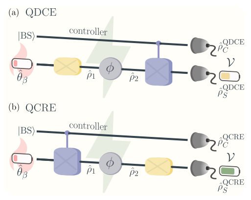
<figcaption class="paper-figure-caption"><b>Fig 1.</b> FIG. 1: Schematic circuit representation of the two Mach–Zehnder interferometric setups considered. In both cases, the interferometric path qubit is initialized in the Gibbs state. (a) In the QDCE, the first beam splitter (BS) is a fixed Hadamard gate (yellow box), while the second (purple box) is controlled by the BS controller. (b) In the QCRE, the roles are swapped, so that the first BS is controlled, while the sec- ond is a fixed Hadamard. In both cases, the phase shifter (gray box) imprints a relative phase ϕ on arm |1⟩.</figcaption>
</figure>
<figure class="paper-figure-card">
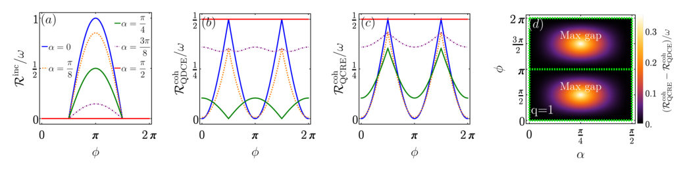
<figcaption class="paper-figure-caption"><b>Fig 2.</b> FIG. 2: (a)–(c) Output ergotropy components as functions of the phase ϕ for different values of the beam-splitter mixing angle α (legend), and (d) coherent ergotropy gap, at q = 1. (a) Incoherent ergotropy Rinc/ω, common to both setups since Rinc QDCE = Rinc QCRE [Eq. (41)], and nonzero only for cos ϕ &lt; 0, vanishing at α = π/2. (b) Coherent ergotropy of the QDCE, Rcoh QDCE/ω [Eq. (31)], which is phase-dependent through G(α, ϕ) and dips to zero at α = π/4, ϕ = π/2, 3π/2. (c) Coherent ergotropy of the QCRE, Rcoh QCRE/ω [Eq. (40)]. The QCRE coherent ergotropy is everywhere at least as large as that of the QDCE. (d) Heatmap of the coherent ergotropy gap Rcoh QCRE −Rcoh QDCE on the (α, ϕ) plane...</figcaption>
</figure>
<figure class="paper-figure-card">
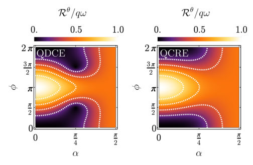
<figcaption class="paper-figure-caption"><b>Fig 3.</b> FIG. 3: Contour maps of the total ergotropy R/qω on the (α, ϕ) plane for QDCE (left) and QCRE (right). Dotted white curves are iso-ergotropic contours [25]. The thermal factor q only rescales the map, so that Rθ/q is independent of the initial temperature [Eq. (46)] for q &gt; 0, extended to q = 0 by continuity. Both peak at the qubit maximum for α = 0, ϕ = π, and are pinned at ωq/2 along α = π/2. They differ in their zeros, since the QDCE output becomes passive at α = π/4, ϕ = π/2 and 3π/2 (dark regions), where the QCRE still yields ωq/(2 √</figcaption>
</figure>
<figure class="paper-figure-card">
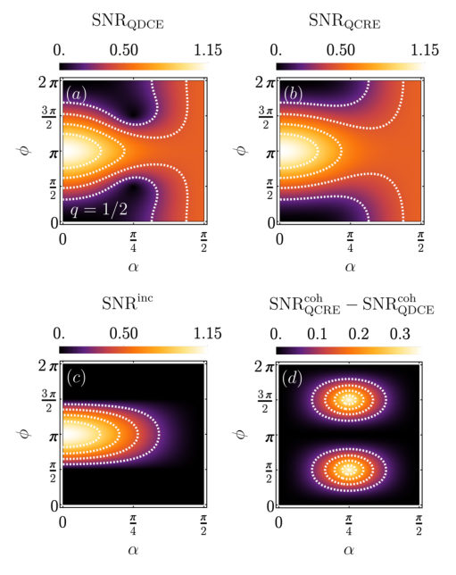
<figcaption class="paper-figure-caption"><b>Fig 4.</b> FIG. 4: Work–like signal–to–noise ratio SNR for the (a) QDCE and (b) QCRE setups, and its equal (c) incoherent component, for q = 1/2. (d) SNRcoh gap.</figcaption>
</figure>
<figure class="paper-figure-card">
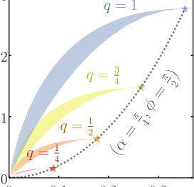
<figcaption class="paper-figure-caption"><b>Fig 5.</b> FIG. 5: Controller entropy difference S(ˆρQDCE C ) −S(ˆρQCRE C ) versus the coherent-ergotropy gap (Rcoh QCRE −Rcoh QDCE)/ω, for α ∈[0, π/2] and ϕ ∈[0, 2π], at four values of q. Stars mark the extreme points α = π/4, ϕ = π/2, 3π/2, and the dotted curve traces them as q varies.</figcaption>
</figure>
</div>

<p><strong>Summary.</strong> This paper analyzes quantum interferometers to show that the extractable work (coherent ergotropy) depends not just on the output interference pattern, but also on the sequence of quantum operations performed. By comparing two setups, the authors demonstrate that path predictability, which is hidden from visibility measurements, dictates the available work. This highlights that visibility is an incomplete measure of quantum coherence for work extraction.</p>
<p><strong>Why it may be interesting.</strong> This work provides a concrete, measurable example showing that thermodynamic work extraction (ergotropy) is a more sensitive measure of quantum coherence than simple interference visibility, linking quantum measurement theory to thermodynamics.</p>
<details>
<summary>Detailed structure</summary>
<p><strong>Main problem.</strong> The study investigates whether the coherent ergotropy (unitarily extractable work) in quantum interferometers is sensitive to path predictability in ways that are invisible to standard measures like interference visibility.</p>
<p><strong>Main result.</strong> The order of operations in the interferometer setup (QDCE vs. QCRE) can lead to different amounts of extractable coherent work, even when visibility and stored energy are identical.</p>
<p><strong>Method.</strong> The authors compare two quantum-controlled interferometer arrangements by calculating the coherent ergotropy for both, extending the analysis to relativistic regimes.</p>
<p><strong>Model / system.</strong> The system uses a two-level system (TLS) traversing a Mach-Zehnder Interferometer (MZI) whose beam-splitter control is governed by an auxiliary quantum degree of freedom, acting as a quantum battery.</p>
<p><strong>Key observables.</strong> Coherent Ergotropy, Interference Visibility (V), Path Predictability (P), Which-Way Distinguishability (D), and the Landauer bound cost.</p>
<p><strong>Important parameters / regimes.</strong> Path predictability ($P$), visibility ($V$), overlap ($
u$), and the control parameter $q$ (related to thermal state preparation).</p>
<p><strong>Assumptions / limitations.</strong> The analysis assumes $\hbar=1$ and compares non-relativistic and relativistic limits where spin decoherence is introduced.</p>
<p><strong>Figures summary.</strong> Figure 1 schematically illustrates the two comparative setups: the Quantum Delayed-Choice Experiment (QDCE) and the Quantum-Controlled Reality Experiment (QCRE) using BS gates.</p>
<p><strong>Paper structure.</strong> The paper systematically compares the theoretical predictions for ergotropy and related coherence measures between the QDCE and QCRE setups, first in the non-relativistic limit, and then extending the formalism to include relativistic spin correlations.</p>
</details>
<details>
<summary>Abstract</summary>
<p>The ergotropy, or unitarily extractable work, of a quantum system naturally splits into incoherent and coherent contributions, respectively set by population inversion and coherences in the energy eigenbasis. We show that this split makes the coherent ergotropy of a Mach--Zehnder qubit sensitive to path predictability that the output interference fringes do not reveal. We send the path qubit, prepared as a thermal quantum battery, through two quantum-controlled interferometers built from the same elements, a fixed beam splitter and a beam splitter coherently controlled to be present or absent, differing only in the order in which these two act. The two arrangements share identical visibility, stored energy, and incoherent ergotropy at every point in the parameter space. Yet, for work extracted from the output battery alone, placing the controlled beam splitter first never yields less coherent ergotropy, and at fixed visibility and interferometric phase the difference is governed by the path predictability that this ordering creates. The same expression reappears as a purity deficit on the beam-splitter controller, so the work advantage comes with a Landauer bound on the cost of locally resetting the controller that is never larger at the same temperature. We further examine the effects of decoherence on the battery and consider a relativistic realization in which a Wigner rotation correlates the particle's spin with its path. Tracing out the spin decoheres the battery and allows the two arrangements to exhibit different coherent ergotropies even in regimes where their non-relativistic counterparts coincide. These results show that interference visibility is not a complete measure of the coherence available as work.</p>
</details>
<p><sub><a href="#top">↑ back to top</a></sub></p>

<p><a id="paper-2610.17334"></a></p>
<h3 id="generating-superposition-of-transverse-ising-ground-states-by-quantum-interaction"><a href="http://arxiv.org/abs/2610.17334v1">Generating Superposition of Transverse Ising Ground States by Quantum Interaction</a></h3>
<p><strong>Authors:</strong> Koushik Das, Sayan Mondal, Ujjwal Sen<br>
<strong>Type:</strong> theory · <strong>Category:</strong> statistical mechanics · <strong>PDF:</strong> <a href="https://arxiv.org/pdf/2610.17334v1">https://arxiv.org/pdf/2610.17334v1</a><br>
<strong>Analysis basis:</strong> full PDF text, analyzed in chunks
<strong>Topic relevance:</strong> 🔥 <code>analog quantum simulation</code> <strong>4/5</strong> · <code>quantum measurements</code> <strong>2/5</strong></p>
<div class="figure-strip-hint">↔ Scroll figures horizontally</div>
<div class="paper-figures-scroll">
<figure class="paper-figure-card">
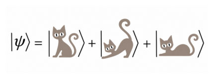
<figcaption class="paper-figure-caption"><b>Fig 1.</b> Figure 1. A cat can be sitting, stretching, or lying down, representing three different phases in this illustration. Its behavior differs between these phases, but how would it behave in a superposition of them? In this work, we investigate coherent superpositions of ground states of the transverse-field Ising model belonging to the ferromagnetic, anti-ferromagnetic, and paramagnetic phases, and study the physical properties of the resulting states.</figcaption>
</figure>
<figure class="paper-figure-card">

<figcaption class="paper-figure-caption"><b>Fig 2.</b> Figure 2. Schematic of the setup for preparing superpositions of quantum Ising ground states and the corresponding superposition sectors. (a) A one-dimensional transverse-field Ising chain coupled to a central spin through the quantum interaction defined in Eqs. (1) and (2). (b) Superposition sectors in the J-δ plane for a spin-1/2 central system. The first and second letters denote the phases of the ground states |g(J −δ)⟩and |g(J + δ)⟩, respectively. (c) Superposition sectors in the J-δ plane for a spin-1 central system. The first, second, and third letters denote the phases of the ground states |g(J + δ)⟩, |g(J −δ)⟩, and |g(J)⟩, respectively. In panels (b) and (c), P, F, and A denote the...</figcaption>
</figure>
<figure class="paper-figure-card">
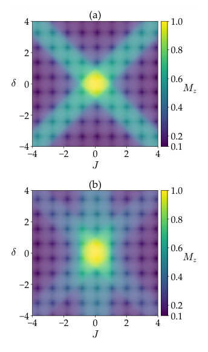
<figcaption class="paper-figure-caption"><b>Fig 3.</b> Figure 3. Transverse magnetization Mz of superpositions of quan- tum Ising ground states across the J–δ plane. (a) The state given in Eq. (12), generated using a spin-1/2 central system, with c+1 = c−1 = 1/ √</figcaption>
</figure>
<figure class="paper-figure-card">

<figcaption class="paper-figure-caption"><b>Fig 4.</b> Figure 4. Nearest-neighbor spin correlations of the state given in Eq. (12), generated using a spin-1/2 central system, across the J–δ plane. Panels (a), (b), and (c) show Cxx 1 , Cyy 1 , and Czz 1 , respectively. The system size is L = 100, with c+1 = c−1 = 1/ √</figcaption>
</figure>
<figure class="paper-figure-card">

<figcaption class="paper-figure-caption"><b>Fig 5.</b> Figure 5. Nearest-neighbor spin correlations of the state given in Eq. (14), generated using a spin-1 central system, across the J–δ plane. Panels (a), (b), and (c) show Cxx 1 , Cyy 1 , and Czz 1 , respectively. The system size is L = 100, with c+1 = c0 = c−1 = 1/ √</figcaption>
</figure>
</div>

<p><strong>Summary.</strong> This work details a method to create quantum superpositions of ground states from the transverse-field Ising model by coupling the chain to a central auxiliary spin. By controlling the coupling strength via adiabatic evolution and measurement, the authors demonstrate control over superpositions spanning paramagnetic, ferromagnetic, and anti-ferromagnetic regimes. The study quantifies this control using magnetization, correlations, and shows that the quantum estimation sensitivity scales with Heisenberg scaling near critical points.</p>
<p><strong>Why it may be interesting.</strong> The ability to coherently engineer superpositions across distinct quantum phases using a controllable interaction mechanism is highly relevant for quantum simulation and understanding quantum phase transitions in many-body systems.</p>
<details>
<summary>Detailed structure</summary>
<p><strong>Main problem.</strong> The paper investigates the preparation and characterization of coherent superpositions of ground states belonging to different magnetic phases of the transverse-field Ising model.</p>
<p><strong>Main result.</strong> The protocol successfully generates superpositions involving up to three distinct magnetic phases, and the quantum Fisher information exhibits Heisenberg scaling near critical points.</p>
<p><strong>Method.</strong> State preparation is achieved via adiabatic evolution of the coupled system followed by projective measurement and post-selection on the central auxiliary spin.</p>
<p><strong>Model / system.</strong> The system is a one-dimensional transverse-field Ising chain coupled to a central auxiliary spin (spin-1/2 or spin-1). The Hamiltonian involves nearest-neighbor coupling strength promoted to an operator acting on the central spin.</p>
<p><strong>Key observables.</strong> Magnetization, nearest-neighbor spin correlations, nearest-neighbor entanglement, and Quantum Fisher Information (QFI).</p>
<p><strong>Important parameters / regimes.</strong> The relative strengths of the transverse field ($h$) and the Ising interaction ($J$), which define the paramagnetic, ferromagnetic, and anti-ferromagnetic phases.</p>
<p><strong>Assumptions / limitations.</strong> The state preparation relies on adiabatic evolution and subsequent projective measurement/post-selection.</p>
<p><strong>Figures summary.</strong> Figures illustrate the setup, the superposition sectors in the J-delta plane for spin-1/2 and spin-1 systems, and the dependence of observables like magnetization and QFI on the coupling parameters.</p>
<p><strong>Paper structure.</strong> The paper first introduces the physical model and the state preparation protocol using adiabatic evolution. It then analytically derives expressions for magnetization and spin correlations for different central spin types. Finally, it analyzes the sensitivity of the state using the Quantum Fisher Information, demonstrating its scaling properties.</p>
</details>
<details>
<summary>Abstract</summary>
<p>We investigate superpositions of quantum Ising ground states generated through a quantum interaction, in which the nearest-neighbor coupling strength is promoted to an operator acting on a central auxiliary spin. We prepare the central spin in a superposition, which allows the chain to evolve coherently under different effective interaction strengths. The states are prepared by adiabatic evolution of the joint system comprising the central spin and the many-body spin chain, followed by a measurement on the central spin and post-selection of a specific outcome. It is possible to prepare superpositions of transverse-field quantum Ising ground states belonging to the three magnetic phases, namely, the paramagnetic, ferromagnetic, and anti-ferromagnetic phases. For a spin-1/2 central system, it is possible to prepare superpositions of ground states belonging to any two phases, while for the spin-1 case, the superpositions may contain three ground states, each belonging to one of the three phases. We analytically derive expressions for the magnetization, spin correlations, and entanglement of such states. The magnetization and spin correlations show distinct features in different superposition sectors. The nearest-neighbor entanglement is largest where the transverse field and Ising interaction compete, and its behavior differs from that of the magnetic observables. We also derive the quantum Fisher information relevant to estimating the Ising interaction strength. And it exhibits multiple peaks near the critical points of the constituent ground states, with the maximum value showing Heisenberg scaling, for the parameters and system sizes examined.</p>
</details>
<p><sub><a href="#top">↑ back to top</a></sub></p>

<p><a id="paper-2610.17701"></a></p>
<h3 id="observation-of-stacked-vortex-structure-with-number-controllable-majorana-zero-mode-in-bimath109mathtemath110mathfete-heterojunction"><a href="http://arxiv.org/abs/2610.17701v1">Observation of stacked vortex structure with number controllable Majorana zero mode in Bi$_{2}$Te$_{3}$/FeTe heterojunction</a></h3>
<p><strong>Authors:</strong> Xinru Han, Zhaokun Luo, Quanxin Hu, Xingjian Zhu, Xiaohong Pan, Dan Mu, Xinyu Liang, Zulin Xu, Qiheng Wang, Ryan L. Kong, Mingyuan Li, Zhengliang Zhang, Fazhi Yang, Mojun Pan, Xin Liu, Qiangqiang Gu, Baiqing Lv, Gan Wang, Hong Ding<br>
<strong>Type:</strong> experiment · <strong>Category:</strong> quantum information and computing · <strong>PDF:</strong> <a href="https://arxiv.org/pdf/2610.17701v1">https://arxiv.org/pdf/2610.17701v1</a><br>
<strong>Analysis basis:</strong> full PDF text, analyzed in chunks
<strong>Topic relevance:</strong> 🔥 <code>QC/QI experiment</code> <strong>4/5</strong> · <code>analog quantum simulation</code> <strong>1/5</strong> · <code>quantum measurements</code> <strong>1/5</strong></p>
<div class="figure-strip-hint">↔ Scroll figures horizontally</div>
<div class="paper-figures-scroll">
<figure class="paper-figure-card">

<figcaption class="paper-figure-caption"><b>Fig 1.</b> Fig. 1| Interface superconductivity emerged in 1QL-Bi2Te3/FeTe with moiré modulation.</figcaption>
</figure>
<figure class="paper-figure-card">
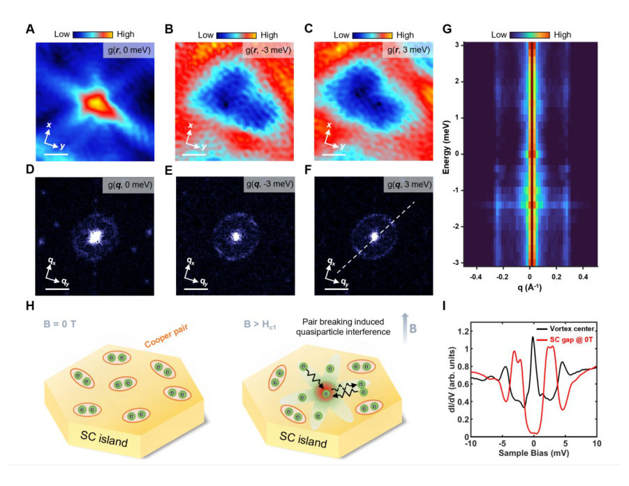
<figcaption class="paper-figure-caption"><b>Fig 2.</b> Fig. 2| Anisotropic Abrikosov vortex and pair breaking induced quasiparticle interference.</figcaption>
</figure>
<figure class="paper-figure-card">

<figcaption class="paper-figure-caption"><b>Fig 3.</b> Fig. 3| Single vortex in superconducting Bi2Te3 island and analysis of the vortex bound</figcaption>
</figure>
<figure class="paper-figure-card">

<figcaption class="paper-figure-caption"><b>Fig 4.</b> Fig. 4| Schematic of hybrid vortices measurement and the concept of operation for MZM</figcaption>
</figure>
</div>

<p><strong>Summary.</strong> This work reports the observation of number-controllable Majorana zero modes (MZMs) in a $ ext{Bi}_2   ext{Te}_3/  ext{FeTe}$ heterojunction. Using STM spectroscopy, the authors characterized a stacked-core vortex structure, confirming the existence of MZMs whose number can be tuned by external magnetic fields. This establishes the material as a highly controlled platform for topological quantum computing research.</p>
<p><strong>Why it may be interesting.</strong> The direct experimental observation and control of MZMs in a solid-state heterostructure provide a crucial, tangible platform for realizing topological qubits, bridging condensed matter physics with quantum computation.</p>
<details>
<summary>Detailed structure</summary>
<p><strong>Main problem.</strong> The primary goal is to establish a controllable solid-state platform for observing and manipulating Majorana zero modes (MZMs) necessary for fault-tolerant topological quantum computation.</p>
<p><strong>Main result.</strong> The authors report spectroscopic evidence for number-controllable MZMs and stacked vortex structures in a stoichiometric $ ext{Bi}_2   ext{Te}_3/  ext{FeTe}$ heterojunction.</p>
<p><strong>Method.</strong> Low-temperature scanning tunneling microscopy and spectroscopy ($   ext{STM/S}$) were used to probe the superconducting gap modulation and vortex bound states.</p>
<p><strong>Model / system.</strong> The system is the stoichiometric one quintuple layer ($ ext{1QL}$) $    ext{Bi}_2   ext{Te}_3/  ext{FeTe}$ heterojunction, which forms a superconducting interface modulated by a moiré superlattice.</p>
<p><strong>Key observables.</strong> Zero-bias conductance peaks ($ ext{ZBCP}$), stacked-core vortex structures, and the tunability of the number of MZMs.</p>
<p><strong>Important parameters / regimes.</strong> Low temperature ($0.4 	ext{ K}$), perpendicular magnetic field ($1.0 	ext{ T}$), and the ability to tune MZM number via magnetic field and island size.</p>
<p><strong>Assumptions / limitations.</strong> The analysis assumes that the observed discrete low-energy states are indeed MZMs, and that the system's topological properties are robustly controlled by the interface structure.</p>
<p><strong>Figures summary.</strong> Figures illustrate the moiré superlattice structure, the anisotropic star-shaped vortex profile, and spectroscopic evidence showing the two distinct, stacked sets of vortex bound states.</p>
<p><strong>Paper structure.</strong> The paper systematically analyzes the moiré pattern formation, characterizes the anisotropic vortex structure, and then details the spectroscopic signatures of the two coexisting, stacked vortex bound state branches, culminating in the demonstration of MZM tunability.</p>
</details>
<details>
<summary>Abstract</summary>
<p>Creation and control of Majorana zero modes (MZMs) in solid devices is the key challenge in realizing fault tolerant topological quantum computation. Here we report spectroscopic evidence for number controllable MZMs in stoichiometric one quintuple layer Bi$_{2}$Te$_{3}$/FeTe heterostructures, together with the observation of stacked vortices in superconducting islands. Low temperature scanning tunnelling microscopy and spectroscopy reveal a long period moire superlattice arising from lattice mismatch, which induces nanoscale modulation of superconducting gaps. Magnetic vortices exhibit a stacked core structure with two layer derived bound state branches: a dispersive branch evolving into an X-shaped pattern away from the vortex center, and a quantum-limit branch characterized by a spatially unsplit MZMs together with discrete integer quantized Caroli-de Gennes-Matricon states. Notably, MZMs are observed in all measured vortices, and their number can be tuned by magnetic field and the size of Bi$_{2}$Te$_{3}$ islands. These results establish stoichiometric 1QL-Bi$_{2}$Te$_{3}$/FeTe as a patterned superconducting interface that enables isolated and few-vortex Majorana configurations, providing a controlled platform for fuse MZMs.</p>
</details>
<p><sub><a href="#top">↑ back to top</a></sub></p>
<hr>
<p>
<a href="index.html">← Index</a>
 · <a href="papers_02.html">Next →</a>
</p>
<hr>

</body>
</html>
